10 Điều quan trọng hàng đầu bạn nên biết về Hẹn hò và tình dục…
10. Đừng bao giờ sử dụng hoặc xuôi theo lập luận “Nếu em/anh thật sự yêu anh/em thì em/anh sẽ…”. Nếu thật sự yêu bạn, họ sẽ không bao giờ muốn thao túng bạn.
- LOGAN KENDELL, 19 TUỔI, POCATELLO, IDAHO
9. Tình yêu không phải một cuộc tranh tài. Số người bạn hẹn hò hay từng lên giường cùng bạn không phải là thước đo tình yêu.
- METTE FOGED, 19 TUỔI, COPENHAGEN, ĐAN MẠCH
8. Bạn là người chịu trách nhiệm chính cho chuyện này.
- LEE HWAYOUNG, 15 TUỔI, THÀNH PHỐ SUNG NAM, HÀN QUỐC
7. Hẹn hò với một người bạn không quá mê mệt có thể mang đến cho bạn những bất ngờ thú vị.
- JENNIFER HASTIE, 19 TUỔI, GULLANE, SCOTLAND
6. Đừng quyết định bất cứ điều gì khi bạn chưa hoàn toàn chắc chắn.
- BAASANJAV, 16 TUỔI, UVS, MONGOLIA
5. Hãy nhớ rằng cách ứng xử của bạn có thể ảnh hưởng đến không chỉ bản thân bạn mà cả gia đình bạn nữa.
- TAKU WADA, 19 TUỔI, AKITA, NHẬT BẢN
4. Chúng ta nên hẹn hò với những người cùng độ tuổi.
- JANET, 17 TUỔI, LONG BEACH, CALIFORNIA
3. Đừng bao giờ nghĩ rằng cuộc đời xem như chấm hết chỉ vì bạn trai/bạn gái chia tay với bạn.
- SOPHIA IACAYO, 18 TUỔI, MANAGUA, NICARAGUA
2. Đừng quan hệ tình dục cho đến khi bạn kết hôn; bạn sẽ không phải hối tiếc vì quyết định này đâu.
- NICK ADAMS, 16 TUỔI, WINCHESTER, VIRGINIA
1. Đôi khi việc hẹn hò rất khó khăn. Ồ, đợi đã! Thật ra lúc nào việc cũng khó khăn.
- RACHEL TURNER, 17 TUỔI, BRIELLE, NEW JERSEY
Quan hệ tình cảm không đơn giản chút nào. Một mối quan hệ cũng giống như một công việc toàn thời gian và chúng ta nên đối xử với những mối quan hệ của mình đúng như thế. Nếu bạn trai hay bạn gái của bạn muốn chia tay bạn, họ phải thông báo và nói chuyện thẳng thắn, rõ ràng.
- Bob Ettinger, nhà văn
Dưới đây là vài câu thoại sến súa nhất từ những bộ phim kinh điển ngày xưa:
“Hãy hôn em đi. Hãy hôn em như thể đây là lần cuối cùng.”
Ilsa nói với Rick, phim Casablanca
“Tôi đã luôn hy vọng mình sẽ gặp được một cô gái thân thiện, đáng yêu - giống như nàng vậy; tôi hy vọng vẻ bề ngoài của tôi sẽ không khiến nàng phát ốm, rồi tôi sẽ cầu hôn nàng và rồi… ừm… cùng nàng ổn định cuộc sống và tận hưởng hạnh phúc. Mọi thứ đã diễn ra suôn sẻ như thế với cha mẹ tôi, trừ vụ ly dị và những việc khác.”
Tom (James Fleet), phim Four Weddings and a Funeral (tựa tiếng Việt: Bốn đám cưới và một đám tang )
“Em giúp anh trở nên trọn vẹn.”
Jerry nói với Dorothy, phim Jerry Maguire
Về cơ bản, tất cả chúng ta đều là những người yêu thích sự lãng mạn. Thế nên, nếu bạn cũng giống với đa số các bạn trẻ khác, nhiều khả năng bạn sẽ bỏ qua những chương trước và lật thẳng đến chương này ngay. Ai cũng muốn biết càng nhiều càng tốt về tình yêu và sự lãng mạn, về chuyện hẹn hò và tình dục. Chào mừng bạn đến với vương quốc tình yêu đầy kịch tính - nơi nhiều niềm vui mà cũng lắm nỗi buồn đau. Hãy sẵn sàng cho hành trình và nhớ ngồi thật vững nhé.
Trong tất cả những quyết định bạn phải đưa ra trong giai đoạn tuổi teen, đây có lẽ là quyết định quan trọng nhất. Vì sao ư? Bởi vì những lựa chọn liên quan đến vấn đề này thường dẫn đến những hệ quả lớn, ảnh hưởng không chỉ đến bạn mà còn đến nhiều người khác nữa. Tương tự những quyết định trước, quyết định này cũng có con đường đúng đắn và con đường sai lầm. Bạn có thể chọn con đường đúng đắn bằng cách hẹn hò một cách khôn ngoan, coi tình dục là vấn đề hệ trọng và kiên trì chờ đợi đến khi bạn tìm thấy tình yêu đích thực của mình và hai bạn đã thật sự gắn kết với nhau. Hoặc bạn cũng có thể chọn con đường sai lầm bằng cách hẹn hò bừa bãi, coi tình dục chỉ như món đồ chơi và làm những chuyện khờ dại như thể không có ngày mai. Tin vui là bạn có thể liếc qua trước từng con đường và học hỏi từ những lựa chọn khôn ngoan cũng như sai lầm của những người đi trước.
Tôi thật sự đã rất lưỡng lự không biết có nên viết chương này hay không vì vấn đề này thật quá nhạy cảm, đặc biệt là phần bàn về tình dục. Một mặt, tôi không muốn đề cập đến một vấn đề tế nhị như thế theo cách bất cẩn hay hời hợt. Mặt khác, tôi cần phải trung thực một cách tàn nhẫn để chia sẻ mọi sự thật. Tôi sẽ cố gắng hết sức cân bằng hai thái cực đó. Tất nhiên, nguồn thông tin đáng tin cậy nhất về hẹn hò và tình dục chính là cha mẹ bạn. Tôi sẽ không cố thay thế vai trò của họ. Bạn cứ xem tôi như một nguồn thông tin tham khảo thêm. Tôi sẽ không tiếp cận chuyện tình dục từ góc độ tôn giáo hay góc độ chính trị, mà sẽ bàn bạc mọi chuyện từ góc độ thực tiễn, dựa trên những nguyên tắc. Thế nên những lời khuyên ở phần này có thể được áp dụng cho các bạn trẻ ở khắp nơi trên thế giới.
ĐÁNH GIÁ TỔNG THỂ VỀ TÌNH HÌNH HẸN HÒ VÀ TÌNH DỤC
Bảng đánh giá sau đây sẽ giúp bạn biết được tình trạng hiện tại của mình trong việc hẹn hò và vấn đề tình dục. Hãy cộng lấy điểm tổng và xem số điểm này nói gì với bạn nhé.
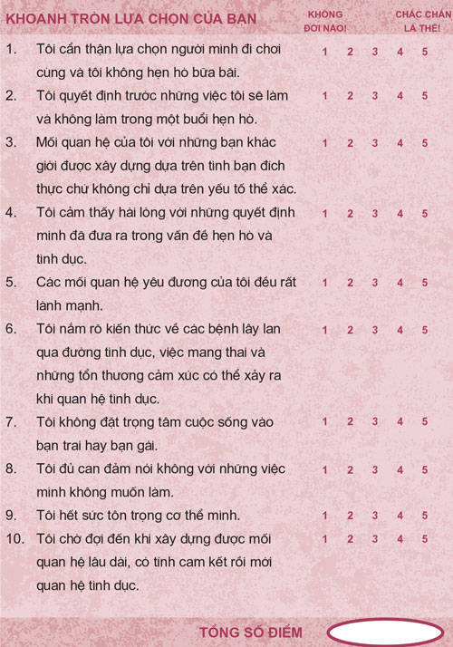
Từ 40 - 50 điểm: Bạn đang đi trên con đường đúng đắn. Hãy cứ tiếp tục phát huy nhé!
Từ 30 - 39 điểm: Bạn đang bước song song trên cả hai con đường. Hãy bước hẳn sang con đường đúng đắn nhé!
Từ 10 - 29 điểm: Bạn đang đi trên con đường sai lầm. Hãy đặc biệt chú tâm vào chương này.
Chương này gồm ba phần. Phần thứ nhất nói về trò chơi kịch tính mà chúng ta thường gọi là hẹn hò, tên phần này là Hẹn hò khôn ngoan . Trong phần thứ hai, chúng ta sẽ thảo luận về Bốn quan niệm sai lầm về tình dục. Bạn tò mò muốn biết những quan niệm này là gì không? Cuối cùng, chúng ta sẽ tìm hiểu về ý nghĩa của tình yêu đích thực qua phần Tình yêu sẽ chờ.
Hẹn hò khôn ngoan
Hẹn hò khôn ngoan: hẹn hò thành công; có chọn lọc đối tượng hẹn hò; cùng đi chơi và tận hưởng niềm vui; vững vàng vượt qua những thăng trầm thường tình trong chuyện tình cảm; giữ vững giá trị bản thân.
Hẹn hò ngu ngốc: hẹn hò thất bại; hẹn hò với bất cứ ai mình cảm thấy rung động; đặt trọng tâm cuộc sống vào bạn trai/bạn gái; để cảm xúc bị tổn thương hết lần này đến lần khác; học đòi làm theo những việc bạn nghĩ ai cũng làm.
Hẹn hò, chỉ riêng từ này thôi cũng đã gợi lên trong chúng ta vô vàn cảm xúc, vui vẻ lẫn buồn đau.
Khi dùng từ “hẹn hò”, tôi đơn thuần muốn nói đến quá trình nam nữ tìm hiểu nhau. Bạn đừng quá ám ảnh về từ “hẹn hò” của tôi nhé. Tôi có thể dùng các từ thay thế như: “tìm hiểu”, “đi chơi cùng”, “gặp gỡ ai đó”. Thế hệ ông bà các bạn gọi đó là “tán tỉnh”. Thế hệ ông bà của những bạn khác có thể gọi chuyện này bằng một tên gì khác.
Nói đến chuyện hẹn hò, thường người ta rơi vào một trong bảy nhóm sau đây. Cũng có lúc bạn vừa thuộc nhóm này lại vừa thuộc nhóm kia. Hãy chọn một nhóm phù hợp với hoàn cảnh của bạn nhé.
Nhóm “ Ước gì …”: Bạn không hẹn hò và ước gì mình hẹn hò.
Nhóm “ Ai thèm quan tâm? ”: Bạn không hẹn hò và bạn cũng không thèm quan tâm đến việc này.
Nhóm “ Tuyệt quá !”: Bạn thật sự rất thích hẹn hò và bạn thắc mắc tại sao người khác lại không cảm thấy như bạn.
Nhóm “ Cứu với! ”: Bạn bị mắc kẹt và không thể thoát khỏi một mối quan hệ tồi tệ.
Nhóm “ Đây là lần cuối ”: Bạn vừa mới tan nát cõi lòng và bạn không muốn hẹn hò thêm lần nào nữa.
Nhóm “ Vui chút thôi ”: Các bạn không thật sự hẹn hò, các bạn chỉ đi chơi cùng nhau thôi.
Nhóm “ Tò mò ”: Các bạn còn quá trẻ để hẹn hò, nhưng các bạn thật sự rất tò mò về chuyện này.
Dù bạn đang ở nhóm nào đi nữa, bạn vẫn có thể trở thành một người hẹn hò khôn ngoan bằng cách hành xử theo những nguyên tắc được nêu trong phần này. Để bắt đầu, chúng ta hãy cùng trả lời vài câu hỏi nhé.
6 CÂU HỎI HẸN HÒ PHỔ BIẾN
1. CHUYỆN GÌ SẼ XẢY RA?
Rất nhiều diễn biến dở khóc dở cười. Chuyện hẹn hò rất phức tạp, khơi gợi rất nhiều cảm xúc và có rất nhiều thăng trầm. Việc chứng kiến các anh chị em của tôi chơi trò hẹn hò cũng giống như đang xem một vở cải lương nhiều tập vậy. Chị cả Cynthia của tôi cứ yêu rồi lại hết yêu, chu trình này diễn ra thường xuyên như cơm bữa. Chị ấy có cả một bộ sưu tập bạn trai: Anh Mark bán thịt, anh Steve học giả, anh Vic người Virginia, anh Castellano người Ý, anh Lennon cơ bắp và anh Jake vị thần Hy Lạp. Cynthia thậm chí còn giữ cả một bức ảnh có kích cỡ to bằng người thật của anh Jake trong phòng mình nữa. Thật quái đản!
Tôi và em trai tôi thường lẻn vào phòng ngủ của chị ấy để đọc trộm nhật ký. Tôi không bao giờ quên được một câu mà chị ấy đã viết in đậm thật to: “Mình rất thích hôn!”. Lúc đó tôi còn quá nhỏ nên tôi đã rất sốc khi biết chị gái tôi đã thật sự hôn ai đó. Thật kinh dị!
Ông anh Stephen của tôi thì rất ghen. Anh ấy yêu một chị tên Vicki. Một buổi tối nọ, anh ấy đã rủ tôi trốn phía sau mấy bụi cây ở gần nhà chị ấy như mấy ông thám tử chỉ để xem chàng trai mà Vicki đang hẹn hò lúc đó có cố làm gì ở trước cửa không.
Nhân vật đáng nhớ nhất chính là cô em gái Colleen của tôi - một nữ hoàng kịch tính ở hàng thượng thừa. Chỉ trong vòng một phút, con bé có thể chuyển từ trạng thái đang vui vẻ trên chín tầng mây sang khóc lóc ầm ĩ vì một gã trai nào đó. Chỉ cần nghĩ về chuyện hẹn hò thôi tôi cũng đã cảm thấy kiệt sức. Đúng vậy đấy, chuyện hẹn hò vô cùng kịch tính.
Nhiều chuyện thất thường, hay thay đổi và thiếu quyết đoán. Hãy dũng cảm đối mặt với thực tế là trong chuyện tình cảm, các bạn trẻ thường thiếu quyết đoán, hay thay đổi thất thường, kén chọn, soi mói, kiểu cách và không thể đoán trước được. Việc này là bình thường. Bạn còn trẻ. Bạn không chắc mình muốn gì. Thế nên bạn có quyền cư xử như thế.
Khi còn ở tuổi teen, tôi thay đổi như tắc kè hoa vậy. Cứ mỗi tuần tôi lại thích một bạn gái khác nhau. Tôi có thể bị thu hút bởi những điều rất đơn giản, chẳng hạn như cách một cô gái hất tóc. Và tôi cũng bị tuột cảm xúc bởi những điều dở hơi nhất, chẳng hạn như cũng cô gái đó nhưng tôi thấy hết thích chỉ bởi cảm thấy khó chịu khi lúc nào cô ấy cũng mặc áo phông. Tôi không cố tình làm tổn thương ai cả, tất cả chỉ là do tôi chưa trưởng thành. Tôi cũng không biết cách thể hiện cảm xúc của mình như nhiều thiếu niên khác.
Các bạn nữ cũng có cảm nhận tương tự các bạn nam. Christie, một học sinh lớp Mười Hai cũng trải qua những gì giống như tôi từng cảm nhận:
Mình bị căng thẳng toàn tập về bọn con trai. Mình có quen một người bạn trai được tầm chín tháng và mình muốn có sự thay đổi. Có lúc anh ta nổi điên khi mình đi chơi với bạn bè hay đi tiệc tùng. Thái độ ấy của anh ta đang hủy hoại mối quan hệ của bọn mình và mình đang cân nhắc chuyện chia tay. Quan trọng nhất, mình đang bí mật crush một người và không ai biết chuyện này cả. Giờ mình bị kẹt trong thế khó và không biết cách thoát ra. Mình không biết phải giải quyết mọi chuyện thế nào cho tốt nữa.
Christie thấy mơ hồ và không thể chắc chắn người cô ấy thích là ai. Bạn trai cô ấy có thể cũng đang cảm thấy như vậy. Ở một chừng mực nào đó, mọi người đang chơi trò đấu trí với nhau. Giờ bạn đã nhận ra vì sao bạn không nên nghiêm trọng hóa chuyện hẹn hò và tình cảm khi bạn còn quá trẻ chưa? Bởi vì lúc này chính là thời gian để bạn khám phá, gặp gỡ nhiều người khác nhau và được tự do thay đổi ý kiến của mình.
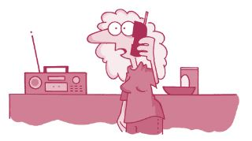
“Đường dây nóng của đài FM - 96 đấy ạ? Vào lần tiếp theo các vị thử nghiệm Hệ thống Phát thanh Khẩn cấp, tôi mong các vị hãy đưa tin về bạn trai tôi bởi mối quan hệ của chúng tôi chính là một thảm họa!”
Bạn trở nên ngớ ngẩn. Nếu bạn cũng giống như hầu hết các bạn trẻ khác, bạn sẽ phạm phải những sai lầm ngớ ngẩn hết lần này đến lần khác. Những sai lầm phổ biến trong lúc hẹn hò bao gồm:
• Nói những điều thật sự ngớ ngẩn , chẳng hạn: “Phiền bạn nói lại tên bạn giúp mình nhé!”.
• Thẹn thùng đến nỗi không nói được câu nào.
• Vô tình tỏ ra LẠNH NHẠT với người bạn đang hẹn hò.
• Lừa phỉnh người mình hẹn hò để họ tin rằng bạn đang yêu họ, trong khi bạn không yêu.
• Đánh rắm (Điều này thật sự có xảy ra, tin tôi đi!).
Michael đã chia sẻ câu chuyện của cậu ấy:
Buổi hẹn hò đầu tiên của mình diễn ra vào đúng lễ hội Homecoming và mình đã hết sức hào hứng về cuộc hẹn này. Cậu bạn Steve của mình mời Lori đi chơi còn mình mời một bạn gái dễ thương tên Kaitlyn. Trường bọn mình có một hoạt động truyền thống là hẹn hò trước lễ hội, thế nên bốn đứa bọn mình đã đi đến hẻm núi vào buổi chiều để nướng xúc xích, kẹo dẻo và chơi vài trò chơi. Mình để ý thấy Steve cứ liên tục lảng vảng quanh Kaitlyn và lải nhải đủ chuyện bên tai cô ấy. Rõ ràng cậu ấy có hứng thú với đối tượng hẹn hò của mình hơn là đối tượng của cậu ấy. Lúc nướng xúc xích, Steve ngồi bên cạnh Kaitlyn và mình ở bên còn lại, trong khi Lori ngồi một mình bên kia.
Chuyện này khiến mình điên tiết, nhưng vì đây là lần đầu tiên mình hẹn hò nên mình cũng không biết phải làm gì và đành giữ im lặng. Mình có thể cảm nhận được rằng Lori cũng đang cảm thấy thật ngớ ngẩn và không biết phải hành xử thế nào. Mọi người đều cảm thấy thật ngượng ngùng. Chỉ có Steve là chẳng để ý gì.
Ngày hôm sau, tâm trạng Steve thật sự rất tồi tệ. Khi mình hỏi lý do, cậu ấy nói cậu ấy vừa bị bạn bè của Lori quát một trận vì tội đã hành xử như một thằng cà chớn vào buổi đi chơi hôm qua. Lori đã buồn đến nỗi cô ấy thậm chí không muốn ăn tối và khiêu vũ cùng Steve tối hôm qua. Cậu ấy đã không biết hành động tán tỉnh của mình lộ liễu như vậy và giờ cậu ấy mới nhận ra mình đã mắc sai lầm lớn. Cậu ấy rất buồn vì đã khiến Lori cảm thấy không thoải mái như thế. Tệ hơn nữa, buổi hẹn ấy đã tiêu tốn của Steve đến bảy mươi lăm đô-la, trong khi tất cả những gì cậu nhận về chỉ là tai tiếng.
Đúng vậy, Steve đã làm hỏng việc và thỉnh thoảng bạn cũng có thể làm hỏng việc như thế. Thật ra, bạn có thể phải trải qua một vài buổi hẹn hết sức khổ sở. Chuyện này cũng bình thường thôi, quan trọng là bạn rút ra được bài học. Việc hẹn hò sẽ giúp bạn rèn luyện các kỹ năng về giao tiếp và thích nghi. Đây chính là những kỹ năng bạn cần khi bước vào đời. Ví dụ như:
• Bạn có ngượng ngùng đến nỗi khiến đối tượng hẹn hò của bạn cảm thấy không thoải mái và họ phải lãnh trọng trách duy trì cuộc trò chuyện không?
• Bạn có đem chuyện chi phí hẹn hò ra bỡn cợt để thể hiện mình vui tính không?
• Bạn có để lại cho đối phương ấn tượng bạn là một người thô lỗ và hay mỉa mai vào lần gặp đầu tiên không?
• Bạn có những kỹ năng xã hội để gặp gỡ cha mẹ của đối tượng hẹn hò và có thể gây thiện cảm với họ khi trả lời các câu hỏi của họ không?
• Bạn có để tâm đến những lời dạy của cha mẹ bạn về phép ứng xử thanh lịch, chẳng hạn như làm thế nào để ăn bít tết mà không phải nhấc miếng thịt lên khỏi đĩa, hay nguyên tắc không được vừa nói chuyện vừa nhai thức ăn không?
• Bạn có biết khiêu vũ, cách gọi món phải phép ở nhà hàng, cách lên kế hoạch cho một buổi tối vui vẻ mà không cần đến trò chơi điện tử và cách thiết lập những lựa chọn dự phòng nếu mọi việc không diễn ra như ý muốn không?
• Nếu buổi hẹn hò không được suôn sẻ, bạn sẽ tìm cách xoay xở hay bạn sẽ mất bình tĩnh?
Nếu bạn đang gặp khó khăn với bất cứ vấn đề nào nêu trên, hãy cứ kiên nhẫn và tiếp tục luyện tập. Những buổi hẹn sẽ giúp bạn từ từ khắc phục được những vấn đề của mình.
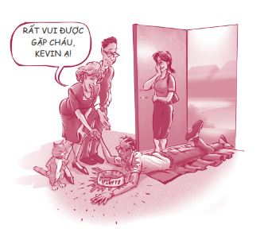
2. NÊN HẸN HÒ VỚI AI?
Khi bạn lựa chọn một người để hẹn hò, điều đầu tiên bạn để ý ở người đó là gì? Tính cách ư? Thôi chúng ta hãy thực tế nhé. Điều đầu tiên bạn quan tâm chính là vẻ ngoài của họ. Bạn không thể cầm lòng được. Mọi việc đều bắt đầu từ khoảnh khắc bạn bị một ai đó hấp dẫn, nhưng ngoài ngoại hình ra, còn có rất nhiều điều thú vị khác ở một người.
Durelle Price - bạn và cũng là đồng nghiệp của tôi - đã tổ chức một hội thảo về đề tài hẹn hò khôn ngoan. Trong bài nói chuyện của mình, cô ấy đã so sánh việc hẹn hò với việc chọn mua ô tô. Bạn đã từng đi mua ô tô với một ai đó chưa, có thể là với cha/mẹ bạn hay một người bạn? Họ có đi thẳng vào cửa hàng và nhờ nhân viên bán hàng chọn bừa một chiếc ô tô cho mình không? Tất nhiên là không! Họ thường sẽ nghiên cứu kỹ lưỡng từ trước và lập ra một danh sách những điều họ cảm thấy bắt buộc phải có ở chiếc ô tô sắp mua và cả những gì không nhất thiết phải có. Ví dụ, một người có thể quyết định rằng thương hiệu, màu sắc phù hợp và chất lượng của chiếc xe là những điều kiện bắt buộc phải có, trong khi người này có thể không quan tâm nhiều đến cửa sổ trời, tính tiết kiệm nhiên liệu và chế độ bảo hành.
Những người hẹn hò khôn ngoan cũng lý trí trong việc lựa chọn đối tượng hẹn hò giống như khi lựa chọn ô tô. Họ không để mặc mọi việc tự đến với mình. Họ có những tiêu chuẩn đặc biệt về tính cách và sở thích mà họ mong muốn đối tượng hẹn hò của mình phải có. Đồng thời họ cũng có danh sách những thứ mà họ xem là không quá quan trọng. Vậy những yêu cầu bắt buộc của bạn là gì? Bạn có cần đối phương phải đẹp không? Hay bạn cần một người tử tế? Vui tính? Thông minh? Tập trung? Thích trẻ con? Được cha mẹ bạn yêu quý? Hay phóng khoáng? Bạn có thích một người có thể khơi gợi nơi bạn những điều tốt đẹp nhất không?
Và những điểm bạn có thể bỏ qua là gì? Nếu đối tượng hẹn hò của bạn không nổi tiếng thì sao? Bạn có thích họ nếu họ không giỏi khiêu vũ hay không có ô tô không? Bạn vẫn sẽ vui vẻ dù đối phương không có những đặc điểm này chứ? Bạn sẽ thấy thế nào nếu họ ăn mặc quê mùa hay không đạt điểm cao trong lớp? Liệu những điểm này có tác động xấu đến mối quan hệ của các bạn không?
Xin hãy dành vài phút để điền vào bảng danh sách dưới đây nhé.
Đối tượng hẹn hò lý tưởng
NHẤT THIẾT PHẢI CÓ
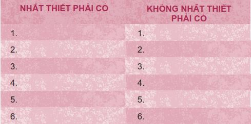
Tóm lại, hãy xác định mục tiêu của mình ngay từ đầu. Bước then chốt để trở thành một người hẹn hò khôn ngoan chính là nắm rõ những điều thật sự quan trọng với bạn và những điều bạn sẽ kiên quyết không thỏa hiệp. Đừng hẹn hò bừa bãi. Hãy kén chọn một chút.
3. NẾU KHÔNG AI THÈM MỜI MÌNH ĐI CHƠI THÌ SAO?
Nếu bạn mười chín tuổi và chưa từng hôn ai, hoặc nếu bạn đang học lớp Mười Hai và chưa bao giờ hẹn hò thì có sao không nhỉ?
Hãy cảm thấy bản thân MAY MẮN vì bạn không phải đối phó với tất cả những drama chốn tình trường.
Nếu thật sự muốn hẹn hò, bạn sẽ có rất nhiều thời gian để hẹn hò trong tương lai. Hẹn hò không phải một cuộc thi xem ai có nhiều bạn trai/bạn gái hơn hay ai sưu tập được nhiều nụ hôn hơn.
Có rất nhiều nam thanh nữ tú không hẹn hò nhiều trong giai đoạn tuổi teen và điều đó hoàn toàn bình thường. Chúng ta còn rất nhiều cơ hội ở phía trước. Vì thế, đừng căng thẳng về việc đó hay cảm thấy như thể bản thân mình có gì bất ổn.
Tuy nhiên, nếu bạn thật sự muốn hẹn hò nhưng tới giờ vẫn đang thui thủi một mình, bạn nên tự hỏi mình những câu hỏi dưới đây:
• Mình có thân thiện với mọi người không?
• Thay vì chờ có người mời mình đi chơi, mình có thể chủ động mời người khác được không?
• Mình có đang cố bào chữa việc mình không hẹn hò?
• Mình có đang làm tất cả những gì có thể để khiến bản thân trở nên hấp dẫn hơn không?
Bạn không cần phải có bộ gien di truyền đặc sắc hay một cơ thể hoàn hảo để trở nên hấp dẫn. Một dịch vụ hẹn hò hàng đầu đã tiến hành một cuộc khảo sát không chính thức để tìm hiểu xem điều gì khiến một người trở nên hấp dẫn nhất trong mắt đối tượng hẹn hò của mình. Và đây là kết quả họ nhận được:
10 ĐIỂM HẤP DẪN NHẤT
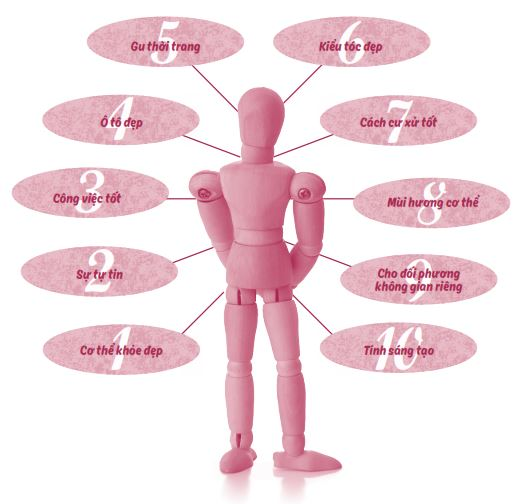
Điều thú vị là tất cả những điểm hấp dẫn nêu trên đều hoàn toàn nằm trong tầm kiểm soát của bạn - có lẽ trừ mục “ô tô đẹp”.
4. SAI LẦM LỚN NHẤT CÁC BẠN TRẺ MẮC PHẢI TRONG QUÁ TRÌNH HẸN HÒ LÀ GÌ?
Đây là một câu hỏi dễ. Câu trả lời chính là đặt trọng tâm cuộc sống của mình vào bạn trai/bạn gái.
Việc có bạn trai/bạn gái không có gì sai trái cả, nhưng nếu bạn bắt đầu đặt trọng tâm cuộc sống của bạn vào bạn trai/bạn gái của mình, bạn đang khiến người kia muốn rời xa mình đấy. Một mối quan hệ dễ chịu ban đầu thường sẽ dần trở thành một mối quan hệ đầy tính chiếm hữu về sau. Lúc này, bạn trai/bạn gái sẽ trở thành điều quan trọng nhất trong cuộc sống của bạn và bạn không thể nghĩ đến bất kỳ điều gì khác ngoài họ. Bạn bị nghiện họ. Dưới đây là ba dấu hiệu cho thấy bạn đang đặt trọng tâm cuộc sống của mình vào bạn trai/bạn gái:
• Tâm trạng mỗi ngày của bạn phụ thuộc vào cách bạn trai/bạn gái đối xử với bạn.
• Bạn có tính sở hữu và hay ghen tuông.
• Bạn không còn dành thời gian cho bạn bè và gia đình mà gần như dành toàn bộ thời gian cho bạn trai/bạn gái mình.
Thật trớ trêu làm sao khi bạn càng xem bạn trai/bạn gái là trọng tâm cuộc sống của bạn, bạn sẽ càng trở nên kém hấp dẫn trong mắt họ. Cuối cùng, người mà bạn dành quá nhiều thời gian để cung phụng thường sẽ rời bỏ bạn. Stephanie đã chia sẻ câu chuyện của cô ấy:
Mình đã vướng phải sai lầm xem bạn trai là trọng tâm đời mình. Người bạn trai cũ chính là tất cả đối với mình, là 100% trọng tâm cuộc sống của mình - ngoài anh ấy ra, không có gì khác tồn tại nữa. Mình không nhận ra mình đã nghĩ như vậy. Mình chỉ muốn ở bên cạnh anh ấy 24/7. Thế nhưng, mình càng muốn ở cạnh anh ấy thì anh ấy lại càng không muốn gặp mình. Mình càng muốn đến gần thì anh ấy càng đẩy mình ra xa.
Khi nhìn lại, mình nhận ra mình đã trở nên kém hấp dẫn đến mức nào khi hành xử như vậy. Mối quan hệ của chúng mình không có sự theo đuổi, không có niềm vui, không có bất ngờ thú vị nào bởi vì tất cả mọi thứ đều đã ở sẵn trước mặt anh ấy, mọi lúc mọi nơi. Quan hệ tình cảm sẽ vui hơn nhiều khi có những niềm vui bất ngờ và một chút ngẫu hứng, thay vì cứng nhắc và đầy ám ảnh. Khi còn trong mối quan hệ, mình chính là người luôn có nhu cầu thực hiện những cuộc nói chuyện buồn nôn kiểu “làm rõ vấn đề”.
Cuối cùng, Stephanie và bạn trai đã chia tay nhau vì anh bạn trai không thể chịu đựng hơn được nữa. Bạn thấy đấy, khi bạn đặt trọng tâm cuộc sống của mình vào người bạn trai/bạn gái, chuyện tình cảm sẽ trở thành nhận thức của bạn, là cặp kính bạn đeo để nhìn đời. Kết quả là những thứ quan trọng khác trong cuộc sống của bạn, chẳng hạn như chuyện học hành, bạn bè và gia đình, sẽ không nhận được sự quan tâm đúng mức.
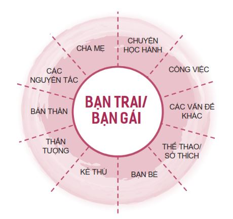
Bạn có thể thích và hẹn hò với một người mà không cần phải đặt trọng tâm cuộc sống của mình vào người đó. Như đã được thảo luận ở những chương trước, trọng tâm đúng đắn duy nhất trong cuộc sống chính là các nguyên tắc, các quy luật tự nhiên chi phối toàn vũ trụ. Khi duy trì một trọng tâm đúng đắn, bạn sẽ trở nên ổn định hơn, tự tin hơn và bớt lệ thuộc vào cách mọi người đối xử với bạn. Hãy nhớ, rất ít người trong chúng ta sau cùng sẽ kết hôn với người mình hẹn hò hồi trung học. Thế nên, dù bạn có vô cùng tin tưởng rằng bạn trai/bạn gái hiện tại chính là định mệnh đời mình, rất có thể họ không phải là định mệnh ấy đâu.
5. LÀM SAO MÌNH BIẾT ĐƯỢC ĐÃ ĐẾN LÚC PHẢI CHIA TAY?
Những mối quan hệ được chia ra thành bốn kiểu: Thắng - Thắng, Thắng - Thua, Thua - Thắng, Thua - Thua. Nếu quan hệ tình cảm của bạn là bất cứ kiểu nào ngoài kiểu Thắng - Thắng, bạn cần phải điều chỉnh mối quan hệ ấy ngay hoặc bạn nên nói lời chia tay.
Thắng - Thắng: Mối quan hệ này tốt cho cả hai bạn. Hãy tận hưởng nhé!
Ví dụ: Kiran và Sonia tìm hiểu nhau nhưng họ cũng gặp gỡ những người khác nữa. Họ trải qua những khoảng thời gian rất tuyệt vời bên cạnh nhau. Mối quan hệ của họ được xây dựng dựa trên tình bạn. Họ khơi gợi điều tốt đẹp nhất ở nhau.
Thắng - Thua: Mối quan hệ này có lợi cho bạn nhưng không tốt cho người kia. Hãy thay đổi hoặc chia tay!
Ví dụ: Jasmine có được rất nhiều ích lợi về mặt xã hội từ bạn trai của cô - Carlos. Anh ấy nổi tiếng và tất cả bạn bè của cô đều cho rằng cô thật may mắn. Cô kỳ vọng Carlos toàn tâm toàn ý với mình và gọi điện cho cô mỗi ngày. Trái lại, Carlos cảm thấy bản thân hoàn toàn bị Jasmine kiểm soát trong khi anh ấy không muốn bị trói buộc. Anh ấy chỉ muốn được vui vẻ và tự do.
Thua - Thắng: Mối quan hệ này có lợi cho người kia nhưng lại không tốt cho bạn. Hãy thay đổi hoặc chia tay!
Ví dụ: Tính đến nay, Laura đã hẹn hò với Quinton được ba năm. Ban đầu, anh ta cư xử rất ngọt ngào, nhưng giờ anh ta lại thường bạo hành tinh thần và thích kiểm soát cô. Quinton muốn hoàn toàn sở hữu bạn gái mình. Laura cảm thấy ngột ngạt và cô không biết làm thế nào để thoát ra.
Thua - Thua: Mối quan hệ này không tốt cho cả hai bạn. Hãy nhanh chóng chia tay!
Ví dụ: Jackson và Emery xem người kia là trọng tâm cuộc sống của mình. Họ liên tục cãi vã và buộc tội nhau lừa dối và trăng hoa. Hai người cứ liên tục chia tay rồi quay lại với nhau vì họ lệ thuộc vào nhau. Họ thường nói với nhau những câu đai loại như: “Em/anh yêu anh/em!” và “Anh/em là đồ cà chớn!” trong cùng một cuộc trò chuyện.
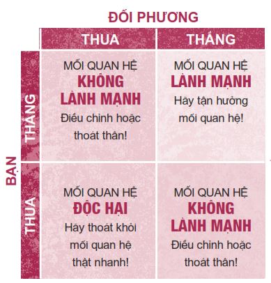
Một cách khác để nhận biết khi nào ta nên chia tay chính là hãy để ý những dấu hiệu cảnh báo nguy hiểm - những dấu hiệu cho bạn biết rằng có điều gì đó bất ổn trong mối quan hệ này. Hãy nghiêm túc đánh giá những dấu hiệu này. Có năm dấu hiệu cảnh báo bạn cần cân nhắc:
1. Tối hậu thư . Hồi học đại học, tôi có quen một cô bạn gái. Lúc đó tôi đang là thành viên đội bóng bầu dục của trường và những trận đấu quan trọng thường được truyền hình trực tiếp trên toàn quốc. Vào đêm trước những trận đấu như thế, cô ấy thường gọi cho tôi để nói những câu như: “Anh có hứa sẽ bên em trọn đời không? Anh phải quyết định ngay sáng mai, nếu không em sẽ ra đi”.
Thế rồi ngày mai cũng đến và cô ấy rút lại quyết định ấy. Nhưng hai tuần sau, cô ấy lại ra một tối hậu thư khác. Cuối cùng, tôi đã nhận ra đây chính là một dấu hiệu cảnh báo nguy hiểm và chúng tôi chia tay. Tôi chỉ ước gì mình đã làm thế sớm hơn.
Các tối hậu thư thường sẽ nghiêm trọng hơn, chẳng hạn: “Tốt nhất em đừng tán tỉnh anh ta nữa, nếu không em sẽ phải trả giá” hoặc “Em phải ngủ với anh, nếu không anh sẽ bỏ em”. Việc ra tối hậu thư thể hiện sự thiếu chín chắn và sự kiểm soát. Đây chính là dấu hiệu cảnh báo bạn nên kết thúc mối quan hệ.
2. Duy trì mối quan hệ vì muốn “cứu vớt” đối phương. Đây là trạng thái bạn cảm thấy mình muốn thay đổi một người nào đó hoặc cứu vớt họ khỏi chính bản thân họ và các vấn đề của họ. Joie đã bị mắc kẹt vào tình thế này và không thể tìm được lối thoát:
Mình hẹn hò với một chàng trai đã được hai năm. Hầu hết khoảng thời gian ấy thật kinh khủng. Anh ấy gặp rất nhiều vấn đề và mình đã cố thay đổi anh ấy. Mình học được rằng chúng ta không thể thay đổi được ai hết. Mình thường phải lái xe khắp nơi tìm anh ấy để xem anh ấy có ổn không. Vì nhiều lý do, mình không thể bỏ mặc anh ấy. Cuối cùng anh ấy bị bắt quả tang đang làm chuyện trái pháp luật và bị tống vào tù. Mình vẫn yêu anh ấy tha thiết và sẽ làm mọi việc vì anh ấy. Mình hy vọng sau khi ra tù, anh ấy sẽ trở thành một người tốt hơn và bọn mình có thể cùng nhau giải quyết các vấn đề.
Bạn biết gì không, Joie? Như chính bạn đã nói, bạn không thể thay đổi được người khác. Chỉ họ mới thay đổi được chính họ mà thôi. Hãy cắt đứt mối quan hệ này.
3. Những lời nói dối. Việc ai đó nói dối bạn cho thấy mối quan hệ giữa các bạn có một nền tảng rất yếu ớt. Cô bạn Annie của tôi đã phỏng vấn một bạn gái tên Astrid về bạn trai của Astrid. Và đây là trích đoạn từ cuộc phỏng vấn đó:
Annie: Anh bạn trai Carson của em có học trường này không?
Astrid: Không, anh ấy đi học ở Riverside. Anh ấy nói anh ấy sẽ sớm tốt nghiệp, nhưng em không biết liệu anh ấy có tốt nghiệp không hay sẽ bỏ học giữa chừng nữa.
Annie: Anh ấy làm nghề gì?
Astrid: Ùm, anh ấy nói với em là anh ấy có đi làm. Nhưng dường như anh ấy không thành thật lắm.
Annie: Chị sẽ hỏi em một câu hỏi vui nhé. Đây có phải là kiểu người mà em muốn gắn bó cả đời không?
Astrid: Không, nhưng anh ấy không… Anh ấy thật lòng với em. À, kiểu như anh ấy nói dối để mọi thứ trông có vẻ sáng sủa hơn.
Tỉnh lại đi Astrid, chẳng lẽ em không nhìn thấy dấu hiệu cảnh báo nguy hiểm to đùng kia sao?
4. Em/anh sẽ không bao giờ tìm được ai khác yêu em/anh như anh/em đâu. Những lời này chính là một dấu hiệu cảnh báo nguy hiểm to ngang ngửa một sân vận động Olympic. Một bạn gái đã chia sẻ câu chuyện của mình:
Năm mười bốn tuổi, mình mê mệt một anh chàng tên Andy. Anh ta mười bảy tuổi, lái một chiếc xe thể thao màu đỏ, có dáng người cao ráo và mình đoán anh ta là một chàng trai khá tốt.
Khi bọn mình mới bắt đầu đi chơi với nhau, mọi thứ thật tuyệt. Anh ta là một quý ông hoàn hảo, anh ta tôn trọng mình và mình đã nghĩ anh ta yêu mình. Nhưng thực tế, phiên bản Andy tử tế chỉ xuất hiện có một lúc thôi. Không bao lâu sau, anh ta bắt đầu ngược đãi mình bằng mọi hình thức có thể. Anh ta từng nói mình sẽ không bao giờ tìm được ai khác yêu mình nữa. Mình đã thật sự tin lời anh ta.
Sau gần một năm chịu đựng sự ngược đãi, cuối cùng mình đã thoát ra khỏi mối quan hệ đó.
5. Nếu anh/em bỏ em/anh. Em/anh sẽ chết cho anh/em xem. Đây lại là một dấu hiệu cảnh báo nguy hiểm khác. Năm Benjamin mười bảy tuổi, cậu hẹn hò với một cô gái. Lúc đầu mọi việc rất tốt đẹp, nhưng sau vài tháng, cô ấy bắt đầu dọa tự tử. Ban đầu, Benjamin rất sốc và vô cùng lo lắng. Cậu hy vọng cô ấy sẽ không bao giờ nhắc đến chuyện này nữa. Nhưng trong suốt vài tháng tiếp theo, cô ấy toàn nói về chuyện tự tử. Sau một thời gian, cậu ấy trở nên chai lì trước những lời đe dọa của cô và bắt đầu hỏi xin lời khuyên từ những người khác. Benjamin kể: “Khi cô ấy phát hiện ra việc tôi tâm sự với người khác chuyện của chúng tôi, cô ấy ra tối hậu thư bắt tôi không được kể với ai nữa, nếu không cô ấy sẽ tự tử thật.
Tôi bắt đầu ngán đến tận cổ và thật sự không biết phải làm gì tiếp theo. Tôi không thể chia tay cô ấy bởi vì tôi sợ cô ấy sẽ làm chuyện dại dột. Nhưng tôi biết chắc một điều là tôi không thể sống tiếp với nỗi sợ thường trực rằng cô ấy sẽ tự tử. Những lời đe dọa của cô ấy đã có tác động rất tiêu cực lên cuộc sống của tôi”.
Sau khi được các chuyên gia tư vấn, Benjamin nhận ra cô ấy không thật sự nghiêm túc trong chuyện tự tử, chỉ là cô ấy đang cố thu hút sự chú ý của cậu mà thôi. Sau khi nói chuyện thẳng thắn với cô ấy, Benjamin đã có thể kết thúc mối quan hệ của họ trong hòa bình.
Đương nhiên, nếu có bất kỳ ai nói với bạn họ muốn tự tử, bạn tuyệt đối không nên xem nhẹ chuyện này và nên giúp họ tìm kiếm sự hỗ trợ thích hợp. Tuy nhiên, bạn đừng cho rằng mình có trách nhiệm phải duy trì mối quan hệ đó. Hãy tìm cách chia tay nhẹ nhàng.
Tôi chỉ vừa mới đề cập đến một vài dấu hiệu cảnh báo nguy hiểm, trên thực tế, còn có rất nhiều dấu hiệu khác. Quan trọng nhất, bạn hãy lắng nghe lương tâm và tin tưởng vào bản năng của mình. Hãy xin lời khuyên từ những người yêu thương bạn nhất. Hãy tránh xa những mối quan hệ nguy hiểm.
6. LÀM CÁCH NÀO ĐỂ THOÁT KHỎI MỘT MỐI QUAN HỆ TIÊU CỰC?
Durelle Price, người bạn mà tôi từng nhắc đến, đã phát triển một chương trình tuyệt vời nhằm tập trung giúp đỡ các bạn trẻ xác định và thoát khỏi những mối quan hệ ngược đãi. Được sự cho phép của cô ấy, tôi đã đưa vào quyển sách này những thông tin do cô ấy cung cấp sau đây.
Mọi việc thường bắt đầu bằng một vài câu chửi bới nho nhỏ, một cái đẩy hoặc một cái tát. Bạn có thể sẽ nghĩ những hành vi đó là do sự nóng giận nhất thời. Sau đó, đối phương thường sẽ nói lời xin lỗi. Bạn muốn tin những chuyện như thế sẽ không tái diễn. Nhưng những lần “nóng giận nhất thời” ấy thật ra chỉ là phần đỉnh của một tảng băng chìm - đó chỉ mới là khởi đầu của cả khối hành xử ngược đãi khổng lồ chắc chắn sẽ đến theo sau đó.
Như cách diễn viên hài Jim Carrey nói:
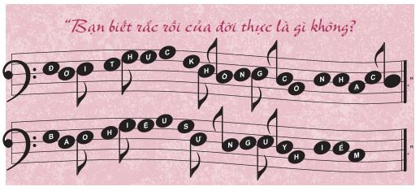
Không ai muốn bị ngược đãi, cũng không ai đáng phải bị ngược đãi. Tất cả những gì chúng ta mong muốn là được yêu thương và được chấp nhận, và Michelle cũng không phải ngoại lệ. Cô đã nảy sinh tình yêu sét đánh với Justin, một ngôi sao thể thao quyến rũ học cùng trường với cô. Có những lúc, Justin rất ngọt ngào. Anh ta khen cô đẹp và nói rằng anh ta yêu cô rất nhiều. Có rất nhiều cô gái muốn đi chơi với Justin nhưng anh ta đã chọn Michelle. Lúc mới quen nhau, có lần hai người cùng đi dự tiệc và một chàng trai họ gặp ở cổng vào đã khen Michelle có đôi mắt tuyệt đẹp. Khi cô chưa kịp nói lời cảm ơn, Justin đã thụi cho anh kia một cú đo ván trên sàn nhà.
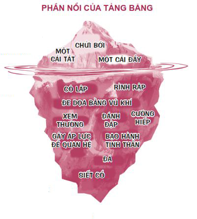
Michelle cảm thấy hết sức bất an trong lòng, nhưng tất cả bạn bè cô đều nói: “Ôi chao, cậu may mắn thật đấy. Anh ấy yêu cậu quá còn gì!”. Vài năm sau, họ quyết định kết hôn.
Một tuần trước lễ cưới, họ có một bất đồng nhỏ. Bất thình lình, Justin lao thẳng đến và siết cổ Michelle.
Đó là hai mươi giây dài nhất Michelle từng trải qua trong đời. Sự việc kết thúc nhanh cũng như cách mọi chuyện bắt đầu. Anh ta quỳ gối xuống ôm lấy Micheelle và van xin cô ấy tha thứ cho mình. Anh ta vừa khóc vừa biện minh rằng mình bị căng thẳng về đám cưới và thề thốt rằng anh ta sẽ không bao giờ làm bất cứ hành động nào giống như thế nữa.
Michelle không biết phải làm thế nào. Cô luôn được dạy phải biết tha thứ cho người khác. Cô cảm thấy xấu hổ và rối trí. Cô quyết định không kể chuyện đó với chị gái của mình. Cô đương nhiên cũng không kể với mẹ và càng không thể kể cho cô bạn thân của mình nghe. Cô cầu nguyện việc đó không bao giờ xảy ra nữa. Một tuần sau, họ kết hôn. Và giờ cô chính thức bị mắc kẹt.
Suốt vài năm sau đó, sự ngược đãi về tinh thần và thể chất Michelle phải chịu đựng trở nên ngày một tồi tệ hơn. Cuối cùng, Michelle đã có đủ dũng khí để rời bỏ Justin. Anh ta vẫn tiếp tục đeo bám theo cô suốt nhiều năm.
Câu chuyện của Michelle không hề hiếm gặp. Thật ra, cứ ba cô gái trẻ thì lại có một cô cho biết mình từng bị đối tượng hẹn hò của mình bạo hành về thể chất. Nếu việc này xảy ra với bạn, đừng chấp nhận cách cư xử này. Đừng nghĩ: “Bọn con trai đều thế cả”. Hãy tin tôi, có rất nhiều chàng trai tử tế không hành xử như thế ngoài kia.
Bảng đánh giá “Thoát thân nhanh” dưới đây sẽ giúp bạn kiểm tra xem mình có đang ở trong một mối quan hệ ngược đãi hay không.
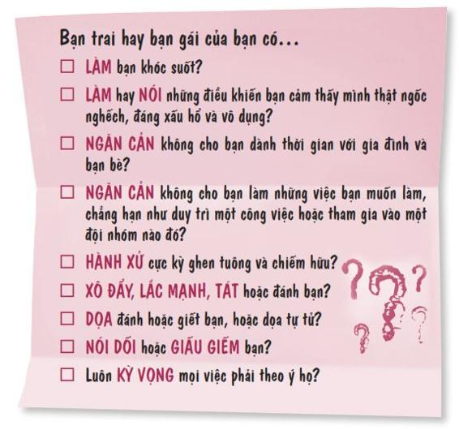
Nếu bạn trả lời “Có” ở bất kỳ câu hỏi nào bên trên, đã đến lúc NÓI LỜI CHIA TAY rồi đấy.
Khi chia tay một người có tính ngược đãi, chúng ta có thể chia tay một cách khôn ngoan hoặc thiếu khôn ngoan. Cách chia tay thiếu khôn ngoan sẽ giống như thế này:
Jamal đã ngược đãi Cheri bằng lời nói, khiến cô ấy thất vọng và khóc suốt. Cheri biết mình cần phải kết thúc mối quan hệ này. Vào ngày Cheri hẹn gặp để nói chia tay, Jamal đang ở một mình trong nhà bà mình và đã nhìn thấy Cheri mang theo áo len và hộp đĩa CD của cậu ta. Cậu ta ngay lập tức đoán được Cheri đến để chia tay. Ngay khi mở cửa, cậu ta đã túm lấy tóc Cheri, đẩy cô vào cửa và chửi rủa cô thậm tệ. Cheri đã vô cùng tổn thương và sợ hãi.
Cheri đã phạm phải một số sai lầm trong kế hoạch chia tay với Jamal:
• Cô ấy đến gặp cậu ta một mình.
• Cô ấy gặp cậu ta ở nơi riêng tư.
• Cô ấy đã xem nhẹ những gì cậu ta có thể làm.
Tiếp theo, hãy xem cách chia tay khôn ngoan là như thế nào nhé:
Devon không thể chịu đựng hành vi ghen tuông và chiếm hữu của Crystal hơn được nữa. Cô ta đi theo Devon đến mọi nơi và quan sát anh từ xa. Cô ta thường hét lên những lời buộc tội vô căn cứ và tát anh khi anh cố thanh minh cho những hành động vô tội của mình.
Devon đã kể với vị mục sư của mình, với bạn bè và gia đình về những hành vi ngược đãi này. Sau đó, Devon gọi điện cho Crystal và nói với cô ta rằng mối quan hệ của họ đã kết thúc. Anh nói cô ta đừng gọi điện hay tiếp cận anh nữa. Việc này thật khó khăn. Anh vẫn còn nhớ lúc hai người mới bắt đầu mối quan hệ, khi đó Crystal đã hết sức ngọt ngào. Vị mục sư giúp Devon vượt qua những cảm xúc buồn đau của mình. Bạn bè và gia đình tiếp tục ủng hộ anh để giúp anh hồi phục tinh thần.
Kế hoạch chia tay của Devon rất thông minh:
• Anh ấy chia tay qua điện thoại.
• Anh ấy kể với bạn bè, gia đình và một vị mục sư về vụ ngược đãi.
• Anh ấy tìm kiếm sự giúp đỡ để ứng phó với những cảm xúc buồn bã sau vụ chia tay.
6 HƯỚNG DẪN HẸN HÒ THÔNG MINH
Xã hội đã vô tình tạo ra hai quy luật cơ bản trong chuyện hẹn hò mà chúng ta có khuynh hướng chấp nhận không cần suy nghĩ.
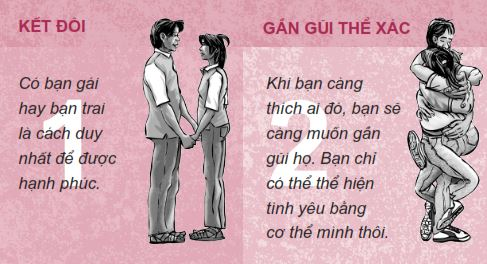
Hai lối suy nghĩ này đã khiến nhiều con tim tan vỡ và tạo ra cái vòng lẩn quẩn của những mối quan hệ ngắn hạn. Bạn không cần phải chấp nhận những quy luật này. Bạn có thể giã từ phương pháp hẹn hò thiếu khôn ngoan mà chúng ta tiếp nhận bấy lâu nay.
Dưới đây là sáu hướng dẫn giúp bạn hẹn hò một cách khôn ngoan được đúc kết từ sự thông thái của nhiều bạn trẻ sáng suốt. Những hướng dẫn này sẽ giúp bạn tránh đặt trọng tâm cuộc sống vào bạn trai/bạn gái mình, có những mối quan hệ lành mạnh, tránh xa những mối quan hệ ngược đãi và tạo thêm niềm vui cho các bạn khi hẹn hò.
1. ĐỪNG HẸN HÒ QUÁ SỚM
Hãy thử nói chuyện với những bạn trẻ bắt đầu hẹn hò khi còn quá trẻ, bạn sẽ thấy đa phần họ luôn ước giá như họ đừng hẹn hò quá sớm. Khi hẹn hò quá sớm, bạn dễ gặp phải nhiều vấn đề chẳng hạn như bị lợi dụng, có quan hệ thể xác quá sớm hoặc không biết cách kết thúc mối quan hệ. Tốt nhất hãy đợi đến khi bạn chín chắn hơn.
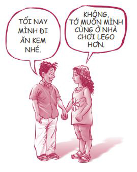
2. HẸN HÒ VỚI NGƯỜI CÙNG ĐỘ TUỔI
Hướng dẫn này thường đi kèm với hướng dẫn đầu tiên. Các bạn gái nên đặc biệt xem trọng hướng dẫn này. Việc hẹn hò với các chàng trai lớn hơn bạn hai, ba hay bốn tuổi có thể khiến bạn hãnh diện, nhưng những mối quan hệ này lại có thể không lành mạnh. Tôi không nhớ nổi đã bao nhiêu lần tôi được chia sẻ những câu chuyện tương tự như câu chuyện dưới đây. Một nữ sinh trường Trung học Allen East kể:
Lần đầu tiên mình có một mối quan hệ nghiêm túc là vào năm mình học lớp Sáu. Mình thậm chí không còn nhớ vì sao mình lại bị anh ta thu hút, nhưng anh ta là người chủ động theo đuổi mình. Không bao lâu sau, mình bắt đầu đắm chìm quá sâu vào mối quan hệ đó. Anh ta lớn hơn mình vài tuổi và mình thấy thích khi được một anh chàng lớn tuổi say mê.
Anh chàng này có rất nhiều vấn đề. Anh ta rất thích kiểm soát và thao túng mình. Anh ta không cho phép mình dành thời gian với bạn bè hay nói chuyện với những chàng trai khác. Khá lâu sau đó, mình mới nhận ra việc này là không bình thường, đặc biệt là ở lứa tuổi của mình. Mình rất sợ anh ta và không biết nên kể với ai. Mối quan hệ không lành mạnh này kéo dài cho đến cuối năm mình học lớp Chín.
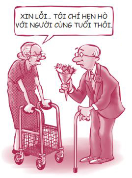
Bạn rất dễ bị lợi dụng khi hẹn hò với người lớn tuổi hơn. Thế nên, đừng mạo hiểm.
3. HÃY TÌM HIỂU NHIỀU NGƯỜI
Sự mơ mộng và lãng mạn thường chắp đôi cánh cho chúng ta bay bổng, nhưng cũng vì vậy mà đôi khi nó cũng làm cho chúng ta rơi vào trạng thái hoang tưởng. Tất cả chúng ta đều mong muốn tìm được nửa kia của mình và sống với nhau hạnh phúc mãi về sau. Vì vậy, việc chúng ta có khuynh hướng yêu ngay người đầu tiên mình tìm hiểu cũng là hợp lẽ tự nhiên. Tuy nhiên, khi chúng ta bám dính vào chỉ một mối quan hệ, chúng ta thường tạo ra những kỳ vọng bất hợp lý và tự tuyệt đường của những mối quan hệ khác.
Trước đây, Kip không chú ý nhiều đến Hope. Hai người vốn là hàng xóm với nhau. Thế nhưng vào đầu hè này, khi Hope xuất hiện ở một bữa tiệc với vẻ ngoài thu hút, Kip bỗng cảm thấy cô ấy thật mới mẻ, như thể cậu mới chỉ gặp Hope lần đầu tiên. Cậu gọi điện để xin cô một cuộc hẹn. Họ nhanh chóng bắt đầu tìm hiểu nhau và dành rất nhiều thời gian ở bên nhau. Kip là học sinh lớp Mười Một còn Hope là học sinh lớp Mười. Hope là người đầu tiên Kip thật sự thích. Tình cảm cậu ấy dành cho cô rất sâu nặng.
Mùa hè năm ấy, gia đình Kip đi nghỉ mát ba tuần lễ. Khi trở về, Kip phát hiện ra trong khi cậu đi vắng, Hope đã đi chơi với hai người bạn của cậu và thậm chí còn hôn một trong hai người. Kip nổi cơn thịnh nộ và cảm thấy bị phản bội! Kip cho rằng hai người đã ngầm thỏa thuận với nhau rằng bọn họ là một cặp và chỉ hẹn hò với nhau thôi.
Khi Kip đến tìm Hope để nói cho ra lẽ, cô ấy nói: “Anh đi lâu quá và em cũng thích anh ta! Bọn mình cũng chưa phải là bạn trai - bạn gái của nhau hay gì cả”. Những lời đó khiến Kip vô cùng đau đớn, vì đúng là cậu đã từng nghĩ bọn họ là người yêu của nhau.
Kip thề sẽ không bao giờ nói chuyện với Hope nữa và cậu ấy đã thật sự tuyệt giao với Hope suốt nhiều tháng liền. Về phần Hope, cô không thể hiểu nổi nguyên nhân của tất cả những ồn ào này là gì. Cô ấy cứ sống tiếp và hẹn hò thêm rất nhiều người khác, trong khi Kip sục sôi trong cơn giận. Phải mất một khoảng thời gian khá dài, cậu ấy mới có thể tin tưởng một cô gái khác và bắt đầu hẹn hò trở lại.
Tôi hy vọng bạn đã thấy những chuyện sẽ diễn ra khi bạn quá nghiêm túc với một mối quan hệ chớm nở và tin ngay rằng người đầu tiên bạn rung động chính là tình yêu đích thực và duy nhất của bạn. Những năm học cấp hai và cấp ba không phải là lúc để bạn xây dựng mối quan hệ quá nghiêm túc.
Đừng vội vàng muốn có bạn trai/bạn gái. Đây là lúc bạn có thể đi chơi với nhiều người, trải nghiệm nhiều niềm vui và không cần quá nghiêm túc về các mối quan hệ. Rồi đến một thời điểm thích hợp trong tương lai, bạn sẽ phải thu hẹp các lựa chọn của mình lại và bắt đầu nghiêm túc hẹn hò với chỉ một người. Nhưng bạn không cần phải làm thế khi còn ở tuổi teen! Bạn sẽ không muốn bước vào thế giới người lớn quá sớm đâu; thế giới đó chưa vui bằng một nửa thế giới tuổi teen của bạn. Hãy tận hưởng những ngày độc thân quý giá của mình.
4. HẸN HÒ THEO NHÓM
Việc hẹn hò theo nhóm, dù chỉ bao gồm hai cặp đôi hay một nhóm đông hơn, cũng có rất nhiều lợi ích. Đi chơi với một nhóm đông người thường sẽ vui hơn và an toàn hơn. Bạn sẽ có cơ hội gặp gỡ nhiều người hơn và có ít kỳ vọng hơn. Aaron, một học sinh lớp Mười Hai, đã chia sẻ kinh nghiệm của mình:
Mình và Chris, cậu bạn thân của mình, thường rủ nhau đi chơi theo cặp. Chỉ có một lần duy nhất bọn mình gặp vấn đề trong việc này. Buổi đi chơi hôm đó có khởi đầu khá ổn. Bọn mình đến đón hai bạn gái và thẳng tiến đến sân bowling. Mọi người đều vui vẻ. Nhưng rồi mọi việc bắt đầu trở nên hơi căng thẳng khi cô bạn đi cùng Chris bỗng nói cô ấy muốn ngồi trên đùi cậu ấy, rồi cô ấy làm thế thật. Cô bạn đi cùng mình thấy vậy liền làm theo bạn mình.
Vì bọn mình chỉ mới biết nhau gần đây và cũng không có ý xác định mối quan hệ tình cảm nghiêm túc, việc này khiến cả Chris và mình cảm thấy không thoải mái. Đến lúc này, bọn mình mới nhận ra giá trị của việc thấu hiểu được suy nghĩ của đối phương. Mình và Chris đã giao tiếp với nhau bằng mắt. Sau đó, bọn mình quyết định ngồi lỳ ở bàn ghi điểm sau lượt ném của bọn mình. Lời từ chối tế nhị này đã có hiệu quả. Bằng cách xử lý tình huống khéo léo, bọn mình không chỉ có thể khiến bản thân thoải mái hơn mà còn có thể giúp các cô gái không cảm thấy ngượng ngùng vì bị bọn mình từ chối thẳng.
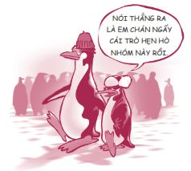
5. VẠCH RANH GIỚI RÕ RÀNG
Ngay từ bây giờ, hãy quyết định xem bạn sẽ hẹn hò và không hẹn hò với người như thế nào, bạn muốn đi xa đến đâu, đâu là giới hạn của bạn và đừng để người khác thuyết phục bạn vượt rào. Đừng đợi đến khi bạn buộc phải đưa ra quyết định rồi mới suy nghĩ, đến lúc đó mọi chuyện đã quá muộn. Nếu bạn không quyết định trước những ranh giới của mình, mọi việc sẽ có thể vượt khỏi tầm kiểm soát của bạn.
Những tiêu chuẩn cá nhân bạn tự đặt ra cho bản thân chính là tấm lá chắn tốt nhất có thể bảo vệ bạn khỏi bị tổn thương, giúp bạn tránh được những kỳ vọng không hợp lý, bệnh tật, việc mang thai ngoài ý muốn hay những chuyện không mong đợi. Đừng đi chơi với những người có quá nhiều tai tiếng. Quy tắc an toàn hàng đầu chính là: Chỉ hẹn hò với những người tôn trọng các tiêu chuẩn của bạn và khiến bạn trở thành một con người tốt hơn khi ở gần họ. Hãy suy ngẫm về thông điệp của bộ phim A walk to Remember (tựa tiếng Việt: Mối tình kỳ diệu ).
Bộ phim nói về Landon Carter - một chàng trai bốc đồng với vẻ ngoài điển trai và sành điệu. Cậu ấy và đám bạn nổi tiếng của mình ở trường Trung học Beaufort hay công khai nhạo báng những ai không nhập hội với họ, trong đó có cả cô bạn Jamie Sullivan quê mùa - người mặc mỗi một chiếc áo len cũ hết ngày này đến ngày khác và thường dạy kèm không công cho các bạn học kém.
Sự đời đã đưa đẩy Landon bước vào thế giới của Jamie và cậu chợt nhận ra Jamie là một cô gái khác biệt. Cô ấy không hề quan tâm đến việc phải hòa nhập với những người bạn nổi tiếng. Landon rất kinh ngạc trước sự tự tin của Jamie và đã từng hỏi cô: “Em không quan tâm mọi người nghĩ gì về em à?”. Sau khi dành nhiều thời gian ở cạnh Jamie, Landon nhận ra Jamie tự do hơn cậu rất nhiều vì cô ấy không phải sống theo quan điểm của người khác như cậu.
Không bao lâu sau, dù đã cố cưỡng lại, họ vẫn yêu nhau và Landon phải chọn giữa địa vị của mình ở trường Beaufort và Jamie. Cậu bạn thân của Landon thảng thốt: “Cô gái này đã thay đổi cậu và chính cậu còn không nhận ra điều đó”. Landon thừa nhận: “Cô ấy tin tưởng ở tớ. Cô ấy muốn tớ trở nên tốt hơn”.
Và cậu đã chọn Jamie.
Sau khi tốt nghiệp trung học, Jamie tiết lộ với Landon cô đang phải chống chọi với căn bệnh bạch cầu. Trong suốt khoảng thời gian ít ỏi còn lại của Jamie, Landon đã làm tất cả những gì có thể để biến những ước mơ của cô thành sự thật, một trong số đó chính là tổ chức hôn lễ với Jamie trong thánh đường nơi cha mẹ cô đã làm lễ cưới năm xưa. Họ đã cùng nhau trải qua một mùa hè tuyệt vời trong tình yêu đích thực.
Không có phép màu nào xảy đến với Jamie. Sau cùng, cô cũng đã đầu hàng trước số phận. Dù tan nát cõi lòng, Landon đã được truyền cảm hứng từ niềm tin Jamie dành cho mình và cậu đã nỗ lực để được nhận vào trường Y. Thế nhưng, cậu vẫn chua xót nói với cha Jamie rằng cậu đã không thể hoàn thành mong muốn cuối cùng của Jamie, chính là giúp cô nhìn thấy một phép màu. Cha của Jamie đã an ủi cậu, ông nói rằng thật ra Jamie đã nhìn thấy phép màu trước khi ra đi, bởi vì cô đã chứng kiến trái tim của một người thật sự thay đổi. Chính là trái tim của cậu.
Giờ đây, bộ phim đã trở thành một bộ phim đáng nhớ!
Bạn không cần phải cảm thấy có lỗi khi đặt ra những tiêu chuẩn cao và cũng đừng hạ tiêu chuẩn của mình xuống chỉ để làm hài lòng người khác. Thay vào đó, hãy nâng tầm họ lên. Sau đây là một số tiêu chuẩn hẹn hò của một vài bạn trẻ:
• Luôn hẹn hò theo cặp hoặc theo nhóm
• Chỉ hẹn hò với những người có tiếng tốt
• Tránh xa những tình huống nhiều rủi ro, chẳng hạn như đỗ xe bên đường, say rượu hoặc phê thuốc hay chỉ ở riêng với nhau khi cha mẹ bạn vắng nhà
• Giữ khoảng cách và không đi quá giới hạn cho phép
Nếu bạn không tự vạch ra ranh giới cho mình, người khác sẽ làm thay bạn.
6. LÊN KẾ HOẠCH
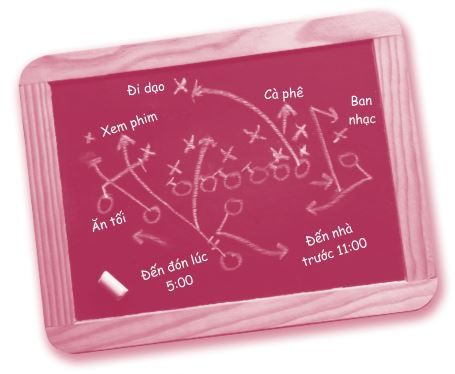
Metta, mười sáu tuổi, đã chia sẻ như sau:
Các chàng trai ạ, mình chia sẻ với các cậu một điều: Nếu các cậu muốn gây ấn tượng với một cô gái, các cậu phải nỗ lực một chút. Tuần rồi, mình vừa có một buổi hẹn hò thật kỳ cục. AJ rủ mình đi chơi bowling với cậu ấy cùng vài cặp đôi khác. Chuyến đi chơi có vẻ sẽ rất vui và mình đã rất mong chờ đến ngày hẹn. Thế mà quá giờ hẹn tận ba mươi phút, AJ và một cặp đôi khác mới đến đón mình. Mình rất bực mình vì chuyện này, nhưng cố kiềm chế. Tệ hơn, khi đến sân bowling, bọn mình phải chờ đến một tiếng mới được vào sân vì quá đông.
Sau khi chơi bowling, bọn mình đến nhà AJ. Bọn con trai bắt đầu chơi game liên tục đến hai tiếng đồng hồ trong khi bọn con gái ngồi xung quanh tám mấy chuyện vô bổ. Thật lãng phí thời gian hết sức! Không cần phải nói, mình sẽ không bao giờ đi chơi với AJ nữa.
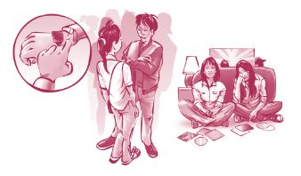
Hãy lên kế hoạch trước mỗi chuyến đi chơi. Đồng thời, bạn cũng phải có một kế hoạch dự phòng, phòng khi mọi việc không diễn ra suôn sẻ. Tôi đã hỏi vài bạn trẻ câu hỏi: Đâu là buổi hẹn hò vui nhất của bạn và cụ thể các bạn đã làm gì vào dịp đó? Một số bạn trẻ đã trả lời như sau:
“Mình và cậu bạn Chris chơi tennis đôi cùng hai bạn gái đồng tuổi với bọn mình.” - Aaron
“Khi đối tương hẹn hò của mình đến đón mình đi trượt tuyết, cả gia đình mình ngỏ ý muốn đi cùng. Đối tượng hẹn hò của mình không hề phàn nàn gì và đã không chút ngượng ngùng quyết định biến chuyến đi hôm ấy trở thành một chuyến đi tuyệt vời cho tất cả mọi người.” - Annie
“Mình và bạn ấy chơi trốn tìm cùng vài cặp đôi khác trên núi.” - Hank
“Bọn mình đi trượt băng tảng (ngồi trên một tảng băng to và trượt từ trên cao xuống), xem phim Kỷ băng hà và đi ăn kem.” - Keli’i
“Bọn mình đi loanh quanh thành phố, ghé thăm một viện bảo tàng rồi anh ấy dẫn mình đi tham quan một vòng trạm cứu hỏa nơi cha anh ấy làm việc. Quan trọng nhất, anh ấy chỉ dắt mình đến những nơi mình thích và tỏ ra rất tôn trọng mình.” - Shannon
Bạn không cần phải chi nhiều tiền mới có những buổi hẹn hò vui vẻ. Sau đây là danh sách một số ý tưởng hẹn hò vừa vui vẻ vừa tiết kiệm bạn có thể thực hiện theo cặp hoặc theo nhóm:
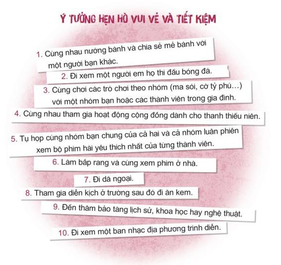
Với những chàng trai vẫn chưa thật sự thoải mái với chuyện hẹn hò, hãy ghi nhớ những câu thoại rất kinh điển sau đây của Alex “Hitch” Hitcherns trong bộ phim Hitch :
“Đêm nay, mỗi khi bạn băn khoăn không biết nên nói gì, không biết trông mình ra sao hay bạn thắc mắc không biết liệu nàng có thích bạn không, hãy nhớ điều này: Nàng đã đồng ý đi chơi với bạn. Điều đó có nghĩa nàng đã nói 'Đồng ý’ trong khi nàng hoàn toàn có thể nói ‘Không’. Điều đó có nghĩa nàng đã lên kế hoạch đi chơi với bạn trong khi nàng hoàn toàn có thể gạt bạn sang một bên. Thế nên, bạn không cần cố gắng khiến nàng thích bạn nữa. Việc của bạn bây giờ là cố gắng KHÔNG làm hỏng mọi chuyện.”
Bốn quan niệm sai lầm về tình dục
Trong cuộc sống, có rất nhiều quan niệm phổ biến được chúng ta chấp nhận rộng rãi. Nhưng một quan niệm nào đó được số đông tin và chấp nhận không có nghĩa là nó đúng. Sau đây là một số quan niệm sai lầm như thế.
Quan niệm sai lầm phổ biến: Ăn nhiều sô-cô-la khiến chúng ta bị nổi mụn.
Sự thật: Trái với niềm tin của nhiều người, hoàn toàn không có mối liên hệ nào giữa việc ăn sô-cô-la và việc bị nổi mụn.
Quan niệm sai lầm phổ biến: Tuy Ông bố chân dài (Daddy longleg) là loài nhện độc nhất trong tất cả các loài nhện, loài nhện này không thể cắn chúng ta được vì miệng nó quá nhỏ.
Sự thật: Biệt danh này được dùng để gọi một vài loài nhện khác nhau: harvestman, crane fly và pholcid. Hai loài đầu tiên hoàn toàn không có độc và chưa có bằng chứng khoa học nào cho thấy nhện pholcid có loại nọc độc nào đáng kể.
Quan niệm sai lầm phổ biến : Chúng ta mất đến bảy năm để tiêu hóa và tống ra khỏi cơ thể những viên kẹo cao su mình đã nuốt vào.
Sự thật: Dù phần lớn kẹo cao su khi bị chúng ta nuốt vào là không thể tiêu hóa, nhưng nó vẫn sẽ được thải ra ngoài cơ thể với cùng thời gian như bất kỳ loại thực phẩm nào khác.
Với vấn đề tình dục cũng vậy, có rất nhiều quan niệm sai lầm về chuyện này. Sau đây là bốn quan niệm sai lầm lớn về tình dục. Tuy nhiên, trước khi chúng ta cùng tìm hiểu vấn đề này, hãy thực hiện bài kiểm tra sau để xem bạn hiểu biết về chuyện này đến đâu. Tôi sẽ cung cấp câu trả lời cho những câu hỏi này trong quá trình chúng ta cùng tìm hiểu về các quan niệm sai lầm.
13 ĐIỀU BẠN LUÔN MUỐN BIẾT VỀ TÌNH DỤC NHƯNG LẠI NGẠI HỎI
1. Câu hỏi đúng/sai: Đa số học sinh trung học đều quan hệ tình dục.
2. Câu hỏi đúng/sai: Việc quan hệ tình dục ở lứa tuổi teen đang ngày càng trở nên phổ biến.
3. STD là chữ viết tắt của:
a) Scare Teens to Death (Dọa các bạn trẻ sợ chết khiếp)
b) Some Tough Dude (Mấy gã khó chơi)
c) Sexually Transmitted Disease (Bệnh lây lan qua đường tình dục)
d) Soft, Tender, and Delicious (Mềm mại, dịu dàng và ngon miệng)
4. Mỗi năm, cứ___bạn trẻ có quan hệ tình dục thì lại có một bạn bị mắc bệnh lây lan qua đường tình dục.
a) Một ngàn
b) Một trăm
c) Năm mươi
d) Bốn
5. Câu hỏi đúng/sai: Người quan hệ tình dục càng sớm càng dễ mắc các bệnh lây truyền qua đường tình dục.
6. Câu hỏi đúng/sai: Các bệnh lây truyền qua đường tình dục luôn có các triệu chứng hoặc dấu hiệu giúp chúng ta dễ dàng nhận biết.
7. Câu hỏi đúng/sai: Bạn có thể bị mắc bệnh lây truyền qua đường tình dục nếu quan hệ tình dục qua đường miệng.
8. Mỗi năm ở Mỹ có khoảng ___ bạn nữ trong độ tuổi vị thành niên mang thai; trong đó 80% là mang thai ngoài ý muốn.
a) 7
b) 50.000
c) 750.000
d) Nhiều vô kể
9. Câu hỏi đúng/sai: Một cô gái có thể mang thai ngay trong lần đầu quan hệ tình dục.
10. Tỷ lệ các chàng trai cưới cô gái mang thai với họ là:
a) 100%
b) 50%
c) 20%
d) 10%
11. Phương pháp bảo vệ đảm bảo an toàn 100% duy nhất là:
a) Kiên trì dùng thuốc tránh thai
b) Dùng bao cao su mỗi lần quan hệ
c) Không quan hệ
d) Đi tắm hai lần một ngày
12. Câu hỏi đúng/sai: Cứ mười bạn trẻ từng quan hệ tình dục thì có một bạn ước họ đã không quan hệ tình dục quá sớm.
13. Sau khi quan hệ tình dục, rất nhiều bạn trẻ:
a) Hối hận
b) Bị trầm cảm và khổ sở vì cảm thấy bản thân vô giá trị
c) Cảm thấy thất vọng, tổn thương, bị phản bội
d) Tất cả những điều trên
1. AI CŨNG LÀM VẬY
Sự thật: Không phải ai cũng làm vậy.
Một số bạn trẻ quan hệ tình dục trước hôn nhân bởi vì họ nghĩ rằng mọi người đều làm thế, họ chỉ muốn là một người bình thường. Bạn biết không, khoảng một nửa các bạn trẻ không quan hệ tình dục trước hôn nhân. Con số này khác nhau ở từng quốc gia. Ở Mỹ, con số này là khoảng một nửa, ở châu Âu thì cao hơn, còn ở châu Á thì thấp hơn một chút. Ở trường bạn, con số này có thể cao hơn hoặc thấp hơn mức một nửa.
Đáp án câu hỏi 1: Sai
Đa số các bạn trẻ không quan hệ tình dục, chỉ khoảng một nửa là có mà thôi.
Vì vậy, nếu bạn quyết định chờ đợi (hoặc bạn đã từng quan hệ nhưng sau đó lựa chọn dừng lại) và bạn đang cảm thấy bản thân bất thường, hãy cứ vững tin. Có rất nhiều người lựa chọn giống bạn.
Bạn có thể sẽ nghĩ: “Những người không quan hệ tình dục sớm chẳng qua là do họ chưa có cơ hội thôi”. Điều này không đúng. Có rất nhiều sinh viên, vũ công, đội trưởng đội cổ động, vận động viên thể thao, các bạn trẻ nổi tiếng và các bạn trẻ bình thường đã quyết định chờ đợi. Số người chọn chờ đợi có khuynh hướng ngày càng gia tăng. Tại sao ư? Tôi cho rằng các bạn trẻ đang bắt đầu ý thức được tình dục ở tuổi teen không phải là chuyện bắt buộc và vì mối đe dọa từ những căn bệnh chúng ta có thể mắc phải qua đường tình dục.
Ngôi sao của Hiệp hội Bóng rổ Quốc gia (NBA) - A. C. Green, người đã giữ kỷ lục NBA trong hầu hết các trận thi đấu liên tiếp, cũng là người đã chọn không quan hệ tình dục sớm. Sau khi chơi ở NBA suốt mười sáu mùa giải, anh ấy đã kết hôn ở tuổi ba mươi tám và đến tận lúc đó, anh vẫn là trai tân. Bạn thấy việc này thật khó tin đúng không? A. C. đã hoàn thành mục tiêu chờ đợi đến khi kết hôn của bản thân bằng cách tuân theo một số quy tắc quan trọng anh ấy tự đặt ra:
Đáp án câu hỏi 2: Sai
Việc quan hệ ở tuổi teen đang trở nên ít phổ biến hơn, chứ không phải phổ biến hơn.
• Tôi kiểm soát những gì tôi xem và nghe. Tôi không xem những chương trình truyền hình và phim ảnh có cảnh giường chiếu và không nghe các loại nhạc khuyến khích việc quan hệ tình dục.
• Tôi tránh xa các tình huống nhạy cảm. Tôi không mời các bạn nữ đến nhà chơi hay xem phim sau nửa đêm.
• Tôi nhờ đến hội bằng hữu. Khi có hẹn với một bạn nữ, tôi thường rủ một người bạn nữa đi chung thay vì đi một mình. Việc kiểm soát bản thân sẽ dễ dàng hơn khi có mặt người thứ ba, việc này khiến tôi cư xử có trách nhiệm hơn.
2. NHU CẦU TÌNH DỤC CỦA BẠN RẤT MẠNH MẼ BẠN KHÔNG THỂ KIỂM SOÁT BẢN THÂN
Sự thật: Bạn hoàn toàn có thể kiểm soát sự thôi thúc của bản năng.
Con người là những sinh vật đáng kinh ngạc! Chúng ta có thể làm những gì chúng ta muốn, kể cả kiểm soát sự thôi thúc của bản năng.
Tôi có một người bạn tên Erik Weihenmayer. Anh ấy là người khiếm thị đầu tiên chinh phục đỉnh Everest. Tôi đã được đọc về nàng Joan xứ Arc - cô gái Pháp mười bốn tuổi dũng cảm đã trở thành một chiến binh huyền thoại. Cô đã cứu nước Pháp khỏi kẻ thù và về sau cô bị thiêu sống trên cọc. Tôi còn nhớ tôi từng xem một chương trình thời sự trên tivi đưa tin về một vụ rơi máy bay ở một dòng sông băng và nhìn thấy một người đàn ông cố gắng chuyền dây an toàn cho người khác cho đến khi anh kiệt sức và hoàn toàn đông cứng. Anh ấy chìm xuống nước và đã trao tặng sự sống cho những người không hề quen biết. Đây chính là những ví dụ về sức mạnh tinh thần của con người.
Vì vậy, mỗi khi có người nói: “Bọn trẻ quan hệ tình dục vì chúng không thể kiểm soát được ham muốn”, tôi chỉ cảm thấy khó chịu. Ý tôi là, hãy nghĩ mà xem. Chúng ta không phải là những chú chó đang trong mùa động dục. Chúng ta hoàn toàn có khả năng kiểm soát hành vi và suy nghĩ của mình.
Đa số những người trưởng thành có trách nhiệm cũng sẽ không cho rằng quan hệ tình dục ở tuổi teen là điều gì đó tốt đẹp. Cũng có người sẽ nói: “Dù sao đi nữa thì chúng ta cũng không thể ngăn được bọn trẻ quan hệ tình dục, vì vậy hãy dạy chúng cách quan hệ tình dục an toàn”.
Đó là lý do trường học dạy các bạn cách tự bảo vệ mình khỏi các bệnh lây lan qua đường tình dục và tránh mang thai ngoài ý muốn. Những việc này được thực hiện xuất phát từ ý định tốt. Nhưng phương pháp trên được đưa ra dựa trên giả định bạn không thể kiểm soát được sự thôi thúc của bản năng. Tôi lại có quan điểm khác về việc này: Nếu loài người chúng ta có thể làm được những chuyện như dời non lấp biển, chúng ta cũng có thể kiểm soát được sự thôi thúc của bản năng. Chúng ta là con người, không phải động vật. Chúng ta có tự do lựa chọn. Hãy cùng xem những câu chuyện được bạn trẻ chia sẻ ở trang web greattowait.com.
Ray: Mình hẹn hò với bạn gái được khoảng sáu tháng. Ngay từ lúc mới quen, mình đã nói với cô ấy rằng mình đã quyết định không quan hệ tình dục vào lúc này. Cô ấy tôn trọng quyết định của mình. Nhưng mình phải thừa nhận rằng đôi lúc việc đó thật khó khăn… Khi bản năng thôi thúc, mình sẽ tự kiềm chế và cố gắng kiểm soát ham muốn. Mình tự nhủ: “Mình có thể chờ. Mình có thể chờ”. Hãy tin mình, mình đã dành rất nhiều thời gian để tự nhủ những lời này với bản thân và việc đó quả thật có hiệu quả.
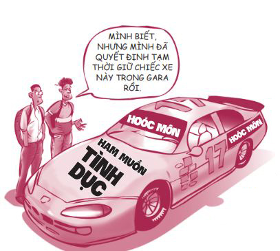
Bạn thấy đó, giữa những chuyện xảy ra với chúng ta (tác nhân kích thích) và những gì chúng ta làm để đáp lại chuyện đó (phản ứng của chúng ta) luôn có một khoảng trống - nơi chúng ta có sự tự do lựa chọn. Việc nắm quyền chủ động chính là cách chúng ta tận dụng khoảng không này.
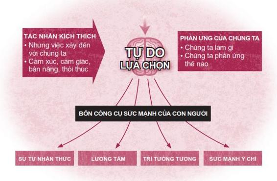
Ray đã có thể giữ được cam kết của mình bằng cách sử dụng các công cụ sức mạnh họ có, bao gồm sự tự nhận thức, lương tâm, trí tưởng tượng và sức mạnh ý chí.
SỰ TỰ NHẬN THỨC: Tôi có thể quan sát và đánh giá những suy nghĩ và hành động của bản thân một cách khách quan. ( Ray biết rằng mình cần có rất nhiều sức mạnh nghị lực để chờ đợi.)
LƯƠNG TÂM: Tôi có thể lắng nghe tiếng nói nội tâm của mình và biết rõ điều gì là đúng, điều gì là sai. ( Ray cảm thấy chờ đợi là việc làm đúng đắn. )
TRÍ TƯỞNG TƯỢNG: Tôi có thể tưởng tượng ra tương lai và những hệ quả từ hành động của mình. ( Ray có thể hình dung được rằng quan hệ tình dục vào lúc này sẽ ràng buộc họ và làm thay đổi bản chất mối quan hệ của họ. )
SỨC MẠNH Ý CHÍ: Tôi tự do lựa chọn và hành động dù gặp phải những tác động to lớn. ( Ray lựa chọn chờ đợi bất chấp những thôi thúc mạnh mẽ của bản năng. )
Kiểm soát ham muốn bản năng
Có ba vấn đề bạn cần lưu ý về nhu cầu tình dục của chúng ta. Thứ nhất, nhu cầu tình dục của con người rất mạnh mẽ. Thứ hai, nhu cầu này diễn ra liên tục. Thứ ba, bản chất của nhu cầu này là tốt đẹp. Nếu không có nhu cầu tình dục, chúng ta sẽ không còn muốn ổn định cuộc sống, sinh con đẻ cái và kết quả là nhân loại sẽ sớm đi đến chỗ diệt vong. Vấn đề nằm ở chỗ nhu cầu này cần phải được chúng ta sử dụng đúng lúc, với đúng người và có sự kiểm soát, giống như bất kỳ nhu cầu nào khác của chúng ta.
Ý tôi là thế giới này sẽ ra sao nếu chúng ta cứ vô tư đáp ứng mọi nhu cầu của bản thân mà không xét đến hậu quả? Nếu bạn nổi giận với ai đó, bạn cứ đấm họ một cú. Nếu bạn muốn ngủ nướng, bạn cứ thế nghỉ học và lăn ra ngủ. Trời ạ, nếu tôi thật sự để bản năng của mình nắm quyền kiểm soát, có lẽ giờ tôi đã nặng gần 160 kí-lô-gam rồi, bởi vì bản năng của tôi là ăn hết mọi thứ tôi nhìn thấy. Nhưng tôi phải kiểm soát bản thân bởi vì tôi không muốn nặng đến 160 kí-lô-gam. Đối với nhu cầu tình dục cũng vậy, ta hoàn toàn có thể kiểm soát được.
Ta cần phải có một chút kỷ luật để có thể kiểm soát bản năng của mình, nhưng kết quả việc này mang lại sẽ hết sức xứng đáng. Như nhà triết học kinh doanh Jim Rohn từng nói: “Tất cả chúng ta đều phải nếm trải một trong hai nỗi đau: nỗi đau của kỷ luật và nỗi đau của sự hối tiếc. Điểm khác biệt giữa hai nỗi đau này chính là sức nặng của kỷ luật tính bằng gam, trong khi sức nặng của sự hối tiếc tính bằng tấn”.
Bản năng tình dục đúng là một phần quan trọng trong cuộc sống của bạn. Nhưng bản năng này không phải là tất cả. Có những khía cạnh khác quan trọng hơn nhiều so với nhu cầu tình dục, chẳng hạn như trí tuệ, cá tính, hy vọng và ước mơ. Như một bạn gái đã nói: “Chúng ta vượt trên những thôi thúc bản năng của chúng ta rất nhiều”.
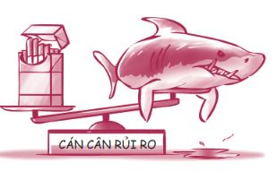
3. TÌNH DỤC AN TOÀN LÀ AN TOÀN
Sự thật: Không có cái gọi là tình dục an toàn!
Xem xét nỗi sợ của bạn một cách khách quan là một việc rất hữu ích. Và đó chính xác là việc mà David Ropeik đã thực hiện cho Trung tâm Phân tích Rủi ro của Đại học Harvard, một công trình được đăng trên tạp chí Prevention .
Những nỗi sợ to lớn và nguy cơ trong thực tế
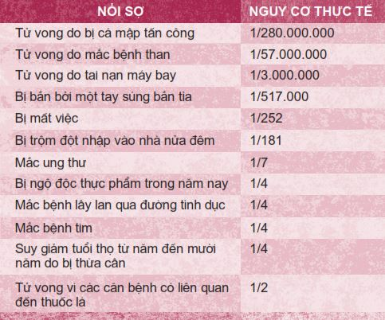
Điều khiến tôi sốc nhất khi đọc bảng số liệu trên chính là
Bạn có thấy việc này quá khó tin không?
Trả lời câu hỏi 3: C
STD là chữ viết tắt của “sexually transmitted disease” (bệnh lây lan qua đường tình dục).
Điều còn gây sốc hơn chính là: Một báo cáo từ Trung tâm Ngăn ngừa và Kiểm soát Bệnh cho biết một nửa thanh niên Mỹ có quan hệ tình dục sẽ bị mắc bệnh lây lan qua đường tình dục trước năm hai mươi lăm tuổi. Tức tỷ lệ mắc bệnh là một phần hai! Từ những kiến thức về các bệnh lây lan qua đường tình dục tôi đã được học, tôi tin chắc rằng các bạn sẽ không muốn mắc phải những căn bệnh này đâu.
Trả lời câu hỏi 4: D
Mỗi năm, cứ mỗi bốn bạn trẻ có quan hệ tình dục thì có một bạn bị mắc các bệnh lây lan qua đường tình dục.
Nếu bạn đang bắt đầu suy nghĩ: “Ôi không, lại thêm một ông già cổ lỗ nữa đang cố hù dọa mình phải tránh xa tình dục”, hãy nghe tôi nói hết đã. Về bản chất tự thân, tình dục không xấu, cũng không sai. Thật ra tình dục là một điều tuyệt vời nếu được diễn ra đúng thời điểm và với đúng người, chẳng hạn như với người mà bạn sắp có sự gắn kết lâu dài. Nhưng nếu diễn ra sai thời điểm và sai đối tượng, tình dục có thể mang lại rất nhiều rủi ro.
THẬT KHỦNG KHIẾP!
Năm 1950, chỉ có hai căn bệnh lây lan qua đường tình dục phổ biến. Ngày nay, có đến hơn hai mươi lăm căn bệnh như thế. Chỉ riêng ở Mỹ, có hơn 3 triệu bạn trẻ mắc các bệnh lây lan qua đường tình dục mỗi năm. Nếu xét trên tổng số 28 triệu bạn trẻ tuổi teen ở Mỹ, con số 3 triệu là rất lớn. Bệnh lây lan qua đường tình dục gây ra những hậu quả xấu xí y hệt tên của chúng: bệnh lậu, bệnh giang mai, rận sinh dục, mụn cóc, bệnh hạ cam, nhiễm trùng chlamydia, nhiễm trùng vùng chậu, nhiễm các loại vi-rút gây u nhú ở người, nhiễm Herpes. Í ẹ! Các bệnh lây lan qua đường tình dục có thể gây ung thư cổ tử cung, mụn cóc ở bộ phận sinh dục, chứng vô sinh ở nam giới và nữ giới, cùng các căn bệnh có thể lây truyền sang thai nhi và trẻ sơ sinh. Những căn bệnh này là nguồn cơn của những cơn đau, bệnh trầm cảm và thậm chí còn có thể giết chết bạn! Càng trẻ tuổi, bạn càng dễ mắc bệnh bởi người trẻ có nồng độ kháng thể (hợp chất giữ chức năng chống lại bệnh tật) thấp hơn người trưởng thành.
Nghe đáng sợ quá phải không? Ôi, tôi cũng thấy choáng váng đây. Một số thông tin sau đây có thể khiến bạn sợ chết khiếp, nhưng bạn cần phải biết sự thật. Đây chỉ là một vài thông tin về bốn căn bệnh lây lan qua đường tình dục phổ biến. Đa phần những thông tin này được trích từ những nguồn thông tin công khai rất đáng tin cậy và từ quyển sách xuất sắc của bác sĩ Meg Meeker có tựa đề: Epidemic: How Teen Sex Is Killing Our Kids (tạm dịch: Bệnh dịch: Quan hệ tình dục sớm đang giết chết con cái chúng ta như thế nào).
Herpes: Bệnh nan y lây lan qua đường tình dục . Bệnh Herpes hiện KHÔNG CHỮA ĐƯỢC. Căn bệnh này vô cùng kinh khủng. Mặc dù những triệu chứng gây đau đớn của bệnh chỉ là tạm thời, nhưng loại vi-rút này sẽ ở lại trong cơ thể bạn suốt đời. Vi-rút Herpes đặc biệt gây khó chịu vì vi-rút này không bao giờ được loại trừ hoàn toàn; vi-rút Herpes hoạt động ngầm trong cơ thể chúng ta và ẩn náu trong các tế bào thần kinh. Vi-rút Herpes có thể nằm âm ỉ suốt nhiều tháng hoặc nhiều năm trời cho đến khi những yếu tố thuận lợi xuất hiện, chẳng hạn chứng căng thẳng. Lúc đó vi-rút sẽ bùng phát và hoành hành, gây ra những vết loét, các thương tổn đau đớn hoặc những nốt phồng rộp ở xung quanh bộ phận sinh dục hay vùng miệng. Bạn thấy ghê chưa? Thậm chí khi vi-rút Herpes âm ỉ trong cơ thể bạn suốt nhiều năm trời, dù bạn không có triệu chứng gì nhưng bạn vẫn có thể lây truyền cho bạn tình của mình.
Đáp án câu hỏi 5: Đúng
Bạn càng nhỏ tuổi, khả năng bạn mắc các bệnh lây lan qua đường tình dục càng cao.
Những thương tổn do loại vi-rút này gây ra cực kỳ đau đớn. Những người mẹ bị nhiễm vi-rút có nguy cơ sinh ra những đứa trẻ bị tổn thương não hoặc bị dị tật về thể chất do tác động của bệnh. Những người mắc bệnh cho biết họ cảm thấy bản thân giống như bệnh nhân hủi, như những món hàng bị hư hỏng; họ không bao giờ ngờ được việc quan hệ tình dục bừa bãi lại ảnh hưởng đến họ suốt đời như vậy.
Đáp án câu hỏi 6: Sai
Các căn bệnh lây lan qua đường tình dục có thể nằm âm ỉ nhiều năm mà không có bất kỳ dấu hiệu hay triệu chứng gì.
Allen kể: “Tôi cứ tưởng cô ta quan hệ với tôi ngay sau khi chúng tôi bắt đầu mối quan hệ bởi vì cô ta thích tôi, nhưng hóa ra cô ta chỉ muốn ra vẻ với bạn bè. Mặc dù muốn xóa sạch toàn bộ ký ức về cô ta, tôi lại không bao giờ làm được. Vì sao ư? Bởi vì suốt cả phần đời còn lại, mỗi khi bắt đầu một mối quan hệ, tôi sẽ phải nói với đối tượng hẹn hò của mình rằng tôi mắc phải một căn bệnh lây lan qua đường tình dục không thể chữa khỏi, đó là bệnh Herpes Simplex 2. Đây là một chứng bệnh nan y. Tôi bị nổi mụn mủ và những nốt phồng rộp ở vùng kín gây ngứa ngáy, khó chịu. Tôi phải nghỉ ngơi rất nhiều. Mỗi khi tôi bị stress, các nốt phồng rộp lại xuất hiện. Tôi không biết liệu trên đời này có ai muốn ở bên cạnh tôi không khi biết tôi mắc căn bệnh này và có thể lây cho họ. Tôi thật sự rất giận vì cô gái kia đã không cảnh báo tôi về căn bệnh và lây bệnh cho tôi. Việc quan hệ tình dục đáng ra phải mang đến những cảm xúc tốt đẹp, thế mà tôi lại cảm thấy vô cùng xấu hổ về bản thân. Nhưng thật ra vấn đề không phải do cô ta dễ dãi, vấn đề là chính tôi đã dễ dãi”.
HPV (Human Papilloma Virus - Vi-rút gây u nhú ở người): Căn bệnh lây lan qua đường tình dục phổ biến nhất. Có khoảng 79 triệu người Mỹ bị nhiễm HPV. Khi bác sĩ Meeker, người chuyên điều trị các bệnh lây lan qua đường tình dục cho thanh thiếu niên, hỏi một nhóm bạn trẻ rằng các bạn ấy có biết việc quan hệ tình dục có thể gây ung thư không, ngay lập tức những bạn trẻ đó đã cười nhạo cô ấy: “Ung thư á? Làm sao quan hệ tình dục lại gây ung thư được chứ?”.
Có khoảng 6.000 phụ nữ chết mỗi năm bởi các bệnh ung thư do HPV gây ra. Vi-rút này hoạt động bằng cách tấn công các tế bào biểu mô trong cơ thể và các thiếu nữ trẻ là những đối tượng dễ bị nhiễm vi-rút này nhất.
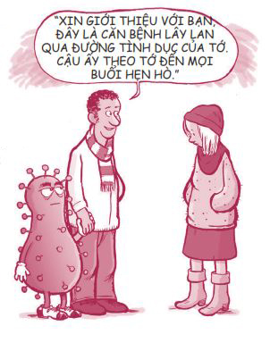
Không những gây ra những tổn thương thầm lặng ở các cơ quan nội tạng mà không hề có triệu chứng, HPV còn gây ra mụn cóc sinh dục ở cả nam và nữ. Những nốt mụn cóc sinh dục này có thể phát triển ngày càng lớn, gây đau đớn và cần phải được điều trị cả bằng thuốc lẫn bằng phương pháp phẫu thuật. Thật kinh khủng! Mặc dù các bệnh nhân có thể điều trị triệu chứng, nhưng cũng giống như Herpes, HPV cũng là một bệnh nan y, KHÔNG THỂ CHỮA ĐƯỢC . Bạn sẽ phải mang vi-rút đó suốt đời.
HIV và AIDS: Căn bệnh tình dục chết người. Một bạn trẻ tên Mark chia sẻ: “Tôi nghe nói về AIDS suốt, nhưng tôi chưa bao giờ nghĩ sẽ có người quen nào của mình mắc bệnh này. Thế rồi cô bạn thân của chị tôi mắc AIDS. Chị này là thành viên trong đội cổ động. Chị ấy học giỏi, lúc nào cũng đạt điểm cao. Tính cách chị ấy cũng rất tốt. Thế mà giờ chị ấy mắc đủ các chứng nhiễm trùng… Tôi đã hỏi lý do chị ấy mắc bệnh và bạn biết chị ấy đã nói gì không? ‘Chị đã tin tưởng một người’. Ai biết được chứ, rất có thể anh chàng kia cũng không biết mình mắc bệnh… Vào thời điểm tôi viết quyển sách này, chị ấy đã yếu đi rất nhiều và chúng tôi không biết chị còn được bao nhiêu thời gian”.
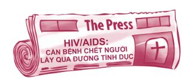
Tại sao căn bệnh AIDS lại được chú ý nhiều như vậy? Bởi vì mỗi năm vẫn có hàng ngàn người chết vì HIV và AIDS. Mặc dù đã có phương pháp điều trị (tuy đắt đỏ), HIV/AIDS thường đi kèm với những tác dụng phụ nghiêm trọng và lâu dài. Bạn có thể bị nhiễm HIV nếu tiếp xúc với máu, tinh dịch, dịch âm đạo hoặc sữa mẹ của người bị nhiễm bệnh. Bạn có thể nhiễm bệnh qua đường quan hệ tình dục khác giới lẫn đồng giới. Bệnh này có thể lây truyền giữa nam và nữ, nam và nam cũng như nữ và nữ. Giống như Herpes, bạn có thể nhận kết quả âm tính khi làm xét nghiệm HIV nhưng vẫn mang vi-rút trong người.
Bệnh giang mai: Bệnh tình dục gây ảnh hưởng nghiêm trọng đến trẻ nhỏ. Bệnh giang mai vẫn đang tiếp tục lây lan và nhiều bạn trẻ đang mắc bệnh này mà không hề hay biết. Trẻ em có thể tiếp xúc với vi khuẩn giang mai khi còn nằm trong bụng mẹ. Nếu một bà mẹ mắc bệnh giang mai mà không được điều trị, sẽ có 20% nguy cơ xảy ra tình trạng sảy thai hay thai chết lưu, 25% nguy cơ đứa trẻ sẽ chết ít lâu sau sinh và 33% nguy cơ đứa trẻ sẽ bị tổn thương não hoặc tổn thương cơ thể vĩnh viễn.
Các mắt xích truyền nhiễm
Trong một nghiên cứu được đăng tải gần đây trên tờ American Journal of Sociology (Nhật báo Xã hội học Hoa Kỳ), các nhà nghiên cứu đã cố gắng lưu trữ thông tin về tất cả các lần quan hệ tình dục giữa các học sinh trong một trường trung học trong khoảng thời gian mười tám tháng. Mục đích của nghiên cứu này là để tìm hiểu con đường lây lan của các căn bệnh tình dục trong giới học sinh. Khảo sát được thực hiện tại một trường trung học ở một thị trấn miền trung tây nước Mỹ (các nhà nghiên cứu gọi đó là trường Trung học Jefferson) với khoảng 1.000 học sinh. Kết quả nghiên cứu đã khiến các nhà nghiên cứu hết sức ngạc nhiên. Kết quả cho thấy trong số 832 học sinh được khảo sát, có 288 em được kết nối trong một mạng lưới tình dục khổng lồ. Rất nhiều em khác kết nối với nhau trong những mạng lưới nhỏ hơn. Đây chính là cách các căn bệnh tình dục lây lan.
CÁC MẮT XÍCH TRUYỀN NHIỄM
Mỗi chấm tròn tượng trưng cho một nam sinh hoặc một nữ sinh tại trường Trung học Jefferson. Các đường nối giữa các chấm tròn đại diện cho hoạt động tình dục đã xảy ra trong khoảng thời gian mười tám tháng.
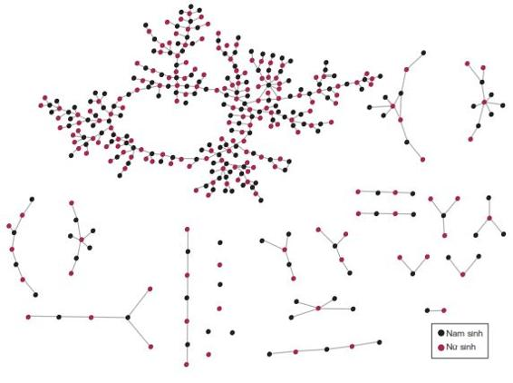
Dưới đây là một số phát hiện quan trọng của nghiên cứu trên:
• Càng quan hệ bừa bãi, chúng ta càng có nguy cơ bị lây bệnh. Nếu bạn nằm trong mạng lưới 288 học sinh, bạn có nguy cơ bị lây bệnh bởi tất cả mọi người trong mạng lưới, dù bạn chỉ có duy nhất một bạn tình đi nữa. Nói cách khác, nếu bạn quan hệ tình dục với một người nào đó, tức là bạn quan hệ tình dục với tất cả những người mà người đó từng quan hệ tình dục.
• Có vài trăm học sinh tại Trường Trung học Jefferson không quan hệ tình dục và không phải đối mặt với nguy cơ mắc các bệnh lây lan qua đường tình dục.
• Một mạng lưới dài và phức tạp có thể dễ dàng bị đứt gãy nếu một người lựa chọn không tham gia nữa. Hãy nghĩ xem các bệnh lây lan qua đường tình dục có thể được giảm thiểu hoặc xóa sổ nhanh chóng đến mức nào nhờ những lựa chọn khôn ngoan.
Thời thế đổi thay
Thế còn luận điểm chúng ta vẫn thường nghe: “Nếu tôi thực hành tình dục an toàn và sử dụng bao cao su, tôi sẽ không mắc các bệnh lây lan qua đường tình dục” thì sao? Xin lỗi phải khiến bạn thất vọng, mọi việc không hề dễ dàng thế đâu.
Khi tôi còn nhỏ, việc nằm phơi mình dưới ánh mặt trời để có làn da rám nắng không phải việc gì to tát cả, nhưng hiện nay, các chuyên gia đều đồng ý rằng chỉ cần vài vết cháy nắng nghiêm trọng cũng có thể gây ung thư da. Tương tự như vậy, trong thập niên 90, nhiều chuyên gia từng cho rằng tình dục an toàn có thể được thực hành bằng cách sử dụng bao cao su. Hiện tại, một vài chuyên gia trong số đó lại nói rằng sử dụng bao cao su không phải là tình dục an toàn mà chỉ là tình dục ít nguy hiểm hơn.
Bác sĩ Patricia Sulak, một nhà nghiên cứu có uy tín kiêm giáo sư trường y, chính là một trong số những chuyên gia đã thay đổi quan điểm. Cô cho hay: “Tôi đã từng nghĩ rằng tất cả những gì chúng ta cần làm là đưa bao cao su vào các trường học. Nhưng sau khi xem xét lại các số liệu, quan điểm của tôi về các bạn trẻ và việc quan hệ tình dục đã thay đổi hoàn toàn”.
Trong vài năm qua, bạn có đoán được những chuyên gia này đã khám phá ra được những gì không? Không có bằng chứng khoa học rõ ràng cho thấy sử dụng bao cao su giúp bảo vệ chúng ta hiệu quả khỏi các bệnh lây lan qua đường tình dục, kể cả căn bệnh nan y và phổ biến HPV. Lý do là một số căn bệnh, chẳng hạn như HPV, được truyền qua việc tiếp xúc da ở bộ phận sinh dục, chứ không chỉ riêng những phần được che chắn bởi bao cao su.
Tương tự, thuốc ngừa thai chỉ có thể ngăn chặn việc mang thai ngoài ý muốn chứ không thể bảo vệ bạn khỏi các bệnh lây lan qua đường tình dục.
Ngoài ra, chúng ta thường sử dụng bao cao su sai cách. Bao cao su có thể bị trượt ra hoặc bị rò rỉ. Hầu hết các cặp đôi cũng không giữ kỷ luật trong việc kiên trì dùng bao cao su.
Khi đọc đến đây, bạn có lẽ sẽ nghĩ ngay đến câu hỏi: Thế còn quan hệ tình dục qua đường miệng thì sao? Hình thức này có an toàn không? Hãy nghe Rhonda Katz, một chuyên gia về thanh thiếu niên và tình dục, trả lời câu hỏi này.
Câu hỏi: Tôi nghe nói hình thức quan hệ tình dục qua đường miệng đang rất phổ biến ở các bạn trẻ. Các bạn trẻ tin rằng hình thức này an toàn và không thật sự là quan hệ tình dục… Vậy quan hệ tình dục qua đường miệng có ẩn chứa những rủi ro gì không?
Trả lời: “Quan hệ tình dục qua đường miệng tiềm ẩn nguy cơ mắc và lây lan các căn bệnh nghiêm trọng, chẳng hạn như bệnh lậu, giang mai, Herpes, HIV, nhiễm khuẩn chlamydia và các căn bệnh khác. Các căn bệnh lây lan qua đường tình dục có thể dễ dàng được lây nhiễm qua đường miệng và cổ họng. Hầu hết các bạn gái không sử dụng bao cao su khi quan hệ tình dục đường miệng, việc này làm tăng nguy cơ lây lan các bệnh tình dục. Việc bị lở loét ở vùng miệng do mắc bệnh Herpes không chỉ khiến bạn xấu hổ, việc này còn có thể khiến bạn lan truyền bệnh Herpes khi quan hệ tình dục đường miệng hay thậm chí khi hôn.”
Nếu bạn bị sốc và sợ chết khiếp khi đọc những thông tin này thì tốt! Hy vọng bạn sẽ biết mình nên làm gì. Nếu bạn đã từng quan hệ tình dục, có lẽ bạn sẽ muốn thay đổi cách sống của mình.
Có thể bạn có quen biết một ai đó đang mắc một trong số các bệnh lây lan qua đường tình dục hoặc có thể bạn nghi ngờ chính mình đang mắc bệnh. Trong trường hợp này, hãy đến gặp bác sĩ để được xét nghiệm ngay. Bạn đang cần sự giúp đỡ và bạn càng nhận được giúp đỡ sớm chừng nào, bạn càng có nhiều sự lựa chọn hơn chừng đó.
Tôi không rõ tình trạng cụ thể của bạn, nhưng trên đây là tất cả những gì liên quan đến các căn bệnh lây lan qua đường tình dục tôi có thể chia sẻ với các bạn.
Đáp án câu hỏi 7: Đúng
Bạn có thể mắc các bệnh lây lan qua đường tình dục khi quan hệ tình dục bằng đường miệng.
Ố Ồ!
Các biện pháp ngừa thai có thể không hiệu quả và chuyện này rất thường xảy ra. Đó là lý do mỗi năm có hàng triệu bạn trẻ trên thế giới vẫn phải mang thai ngoài ý muốn. Nếu bạn có quan hệ tình dục, nhiều khả năng bạn sẽ mang thai hoặc làm người khác mang thai, dù bạn có sử dụng biện pháp bảo vệ đi nữa.
Đáp án câu hỏi 8: C
Hiện nay, mỗi năm có 750.000 trẻ vị thành niên mang thai ở Mỹ.
Bạn cũng có thể mang thai chỉ sau một lần quan hệ. Tôi có biết một bạn gái người Úc, bạn ấy đã phát hiện ra mình mang thai vào đúng ngày bạn ấy được nhận vào ngành đào tạo âm nhạc của một trường đại học hàng đầu. Dĩ nhiên, bạn ấy đã không thể học đại học và cuộc đời bạn ấy đã rẽ sang một hướng hoàn toàn khác.
Các bạn gái ơi, bạn và bạn trai của bạn sẽ không cùng mang thai đâu, chỉ một mình bạn phải mang thai thôi. Việc này sẽ thay đổi cuộc sống của bạn mãi mãi. Jerusha, một cô bé làm mẹ vào năm mười sáu tuổi, đã chia sẻ về một ngày bình thường của cô tại Trường học dành cho các bà mẹ trẻ:
Trả lời câu hỏi 9: Đúng
Các bạn gái có thể mang thai ngay từ lần đầu quan hệ.
Tất cả các bạn gái ở đây đều đang trải qua những giai đoạn khác nhau. Một số vừa mới mang thai, một số đang sắp sinh và con của một số bạn khác thì đã được một hoặc hai tuổi. Thoạt đầu, bạn sẽ thường bị phân tâm khi phải ngồi cùng lớp với những bà mẹ trẻ và con của họ. Có nhiều lúc, bạn đang làm bài kiểm tra thì bốn, năm đứa trẻ bỗng hét lên ngay bên cạnh bạn.
Đây là một ngày điển hình của mình và Kristin - con mình.
6:30: Mình thức dậy và vệ sinh cá nhân.
7:00: Mình đánh thức Kristin, cho con bé ăn sáng, tắm rửa, cột tóc, thay quần áo cho con bé, chuẩn bị bữa trưa mang theo và cả tã giấy nữa.
8:00: Mình đi học.
8:15: Mình cố dỗ dành để Kristin chịu vào nơi giữ trẻ. Con bé thường khóc và cố giữ mình lại. Mình cũng khóc vì việc rời xa con bé quả thật rất khó khăn.
8:30: Lớp học bắt đầu. Mình cố tập trung làm bài tập nhưng lúc nào cũng lo lắng không biết Kristin có ổn khi thiếu mình không. Mình thường bị gọi ra để thay tã cho con bé, rồi lại phải rời đi để con khóc la lần nữa. Việc này khiến tim mình đau như cắt.
12:00: Vào bữa trưa, mình phải vội vã đi đón con, cho con ngồi vào một chiếc ghế cao, cho con ăn rồi dọn dẹp bãi chiến trường của con bé. Nếu may mắn, mình cũng được ăn trưa. Sau đó, mình phải vội vã đưa con trở lại nơi giữ trẻ. Tất cả mọi chuyện gói gọn trong vòng 30 phút. Khi mình rời đi, con bé sẽ lại buồn bã thêm lần nữa.
Và đây chỉ mới là một nửa ngày của Jerusha thôi đấy.
Các bạn trai ơi, nếu các bạn làm một cô gái mang thai và cô ấy sinh con, các bạn vừa trở thành cha của một đứa trẻ. Dù bạn có cưới cô gái đó hay không, đứa bé vẫn là con bạn! Dù bạn quyết định chịu trách nhiệm và chăm sóc đứa trẻ hay lựa chọn vô trách nhiệm và bỏ rơi đứa bé, bạn cũng đã bị ràng buộc với đứa trẻ cả đời. Liệu bạn đã sẵn sàng để trở thành cha của một sinh linh đang sống, đang hít thở và cần bạn yêu thương, quan tâm hết mực?
Đáp án câu hỏi 10: C
Chỉ có 20% nam giới làm bạn gái mang thai cưới cô gái ấy làm vợ.
Hãy tìm hiểu xem việc mang thai ngoài ý muốn đã ảnh hưởng đến cuộc sống của Dylan như thế nào nhé.
Mình còn nhớ ngày bạn gái mình thông báo với mình chuyện cô ấy mang thai. Mới phút trước, mình còn là một kẻ vô lo, bỗng phút sau, mình đã lãnh trong tay trách nhiệm nặng nề. Xin đừng hiểu lầm, mình sẽ không từ bỏ con gái mình vì bất cứ lý do gì. Nhưng giờ đây, trong khi bạn bè mình tha hồ đi chơi và tận hưởng mọi niềm vui với nhau, mình phải đi làm, cố gắng kiếm đủ tiền để lo cho con mình. Việc quan hệ tình dục từng khiến mình cảm thấy mình là người trưởng thành. Nhưng giữa việc cảm thấy mình trưởng thành và việc thật sự trưởng thành có sự khác biệt rất lớn. Giờ đây, mình đã biết chịu trách nhiệm cho cuộc sống của người khác là như thế nào. Dù sao đi nữa, tương lai của mình sẽ luôn bị ràng buộc với con bé vì con bé là con gái mình.
Một con người trọn vẹn
Đáp án câu hỏi 11: C
Không quan hệ trong độ tuổi vị thành niên là phương pháp duy nhất bảo vệ chúng ta an toàn 100% khỏi bệnh tật, việc mang thai ngoài ý muốn và tổn thương cảm xúc.
Cho đến lúc này, chúng ta chỉ mới bàn về những nguy cơ về mặt thể chất của việc quan hệ tình dục, chẳng hạn như bệnh tật hay mang thai ngoài ý muốn. Thế nhưng, việc quan hệ tình dục bừa bãi còn mang lại những nguy cơ nghiêm trọng về mặt cảm xúc, chẳng hạn như cảm giác đau lòng, hối hận, tội lỗi hay thậm chí là chứng trầm cảm. Hãy nhớ rằng mỗi người trong chúng ta đều được tạo nên bởi bốn phần: cơ thể, trái tim, trí óc và tâm hồn. Bốn phần này kết hợp lại để tạo thành một con người hoàn chỉnh. Giống như bốn lốp xe ô tô, nếu một trong bốn bị mất cân bằng thì cả bốn chiếc lốp đều sẽ loạng choạng. Hãy ý thức rõ điều này: Quan hệ tình dục - một vấn đề liên quan thể chất - cũng vẫn tác động đến tình cảm, tâm trí và tinh thần của bạn, dù bạn muốn hay không. Đừng bao giờ nghĩ bạn có thể quan hệ thể xác với một người nào đó mà không để chuyện đó ảnh hưởng đến cảm nhận của bạn về bản thân.
Sau tất cả những gì chúng ta đã thảo luận trong phần này, bạn đã biết tại sao tôi có thể nói chắc rằng không có cái gọi là “tình dục an toàn” chưa?
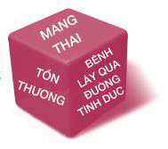
4. ĐÓ KHÔNG PHẢI CHUYỆN GÌ TO TÁT
Sự thật: Quan hệ tình dục thật sự là chuyện to tát!
Có lẽ bạn chưa có ý định kết hôn trong khoảng mười năm tới, thế nên đâu có hại gì nếu bạn vui vẻ một chút, miễn bạn không làm ai tổn thương hay mang thai là được. Bạn nghĩ thế đúng không?
Tôi không thể trách móc bất kỳ ai chỉ vì người đó tin rằng tình dục không phải chuyện gì to tát. Bởi lẽ, các phương tiện truyền thông thường xem tình dục là một hình thức giải trí sẵn có, có thể được mua bán, cho thuê hoặc kinh doanh. Tình dục có mặt mọi lúc mọi nơi, dưới mọi hình thức, ở đời thực, trong thế giới ảo, qua điện thoại, qua băng đĩa hoặc sách báo.
Đương nhiên, một số người sẽ cho rằng những gì bạn xem trên phim ảnh và truyền hình sẽ không thật sự ảnh hưởng đến bạn. Nhưng hãy nghĩ mà xem, nếu một đoạn quảng cáo ba mươi giây có thể khiến bạn đổi loại dầu gội đang dùng thì làm sao bạn có thể nằm ngoài tác động của truyền thông và quảng cáo được chứ. Như Alisia chia sẻ:
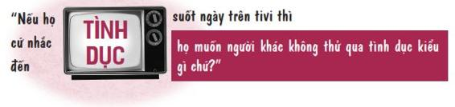
Trong nhiều bộ phim, các nhân vật quan hệ tình dục ngay buổi hẹn hò đầu tiên. Khi bạn xem những cảnh phim như thế nhiều lần, đến một lúc nào đó, bạn sẽ bắt đầu cho rằng đây là chuyện bình thường và việc này không có vấn đề gì cả. Chúng ta thường quên rằng các bộ phim không phản ánh sự thật.
Ví dụ, bạn có từng xem một bộ phim nào trong đó hai nhân vật chính ngủ với nhau, sau đó cảm thấy tội lỗi, hối tiếc hoặc một trong hai người họ bị mắc bệnh lây lan qua đường tình dục chưa? Bạn có từng xem một bộ phim tình cảm nói về cảm giác bị phản bội của một cô gái khi cô ấy biết mình mang thai, trong khi người bạn trai lại muốn bỏ rơi cô ấy? Bạn thường không thấy những cảnh đó vì những câu chuyện này không vui vẻ hay lãng mạn chút nào. Bạn đừng vội tin vào khẩu hiệu của Hollywood: “Tình dục không phải chuyện gì to tát”. Đó là lời nói dối đấy.
Thân mật và cam kết
Với khoảng 37 ngàn tỷ tế bào hoạt động nhịp nhàng với nhau, cơ thể chúng ta là một thực thể phi thường cần được tôn trọng, chứ không phải một vòng quay ngựa gỗ ai cũng có thể trèo lên đi một vòng cho vui. Việc chia sẻ phần riêng tư nhất của bản thân với người mình chưa hoàn toàn gắn kết là việc thật vô lý. Thế thì một mối quan hệ có cam kết là gì? Theo như tôi biết, hình thức tốt nhất của mối quan hệ có cam kết chính là hôn nhân. Với một cuộc hôn nhân, bạn có hôn thú, một đám cưới công khai, nhẫn cưới, sự công nhận của cộng đồng và lời thề hứa yêu thương nhau cả khi khỏe mạnh lẫn lúc ốm đau.
Thế còn quan hệ tình cảm thời trung học, khi các bạn yêu nhau rất thật lòng, thì sao? Đó có được xem là mối quan hệ có cam kết hay không? Không hẳn. Dù các bạn có thể có tình cảm sâu nặng với nhau, mối quan hệ này lại không có sự cam kết thật sự. Bởi vì những mối quan hệ như thế không có hôn thú, không có hôn lễ công khai, không được sự chứng kiến, tác thành của người thân và bạn bè. Các bạn cũng không cùng nhau san sẻ trách nhiệm trong cuộc sống như thanh toán tiền thuê nhà, dọn rửa chén bát, giặt giũ hay thanh toán các hóa đơn cùng nhau. Các bạn có thể dễ dàng chia tay, chuyển đi nơi khác, vào đại học hay bắt đầu có tình cảm với người khác, v.v.
Một số bạn trẻ cho rằng nếu bạn chưa thật sự làm việc đó (giao hợp), tức bạn vẫn chưa quan hệ tình dục và bạn vẫn có thể được xếp vào dạng “còn trinh theo nghĩa đen”. Thôi nào, hãy thực tế. Tình dục là tình dục.
Tôi rất tiếc phải nói thẳng điều này, nhưng nếu bạn cởi khóa quần, trút bỏ áo, luồn tay vào chỗ kín hoặc mơn trớn những phần nhạy cảm của nhau, đó chính là hành vi thân mật, chính là tình dục rồi. Mặc dù một số hình thức quan hệ tình dục có thể ít rủi ro về mặt thể chất hơn các hình thức khác, nhưng mọi hình thức quan hệ tình dục đều chứa đựng rủi ro về mặt cảm xúc.
Mọi người vẫn hay tranh cãi với nhau về ý nghĩa thật sự của các khái niệm “quen qua đường” hoặc “bạn chung giường”, nhưng về cơ bản, những mối quan hệ kiểu này không khác gì việc chấp nhận quan hệ tình dục mà không có bất kỳ sự ràng buộc nào về mặt tình cảm, xã hội hay pháp lý. Trên thực tế, đây chỉ là cách người ta sử dụng cơ thể của nhau như một công cụ để đạt khoái cảm mà không cần đến bất cứ sự kỳ vọng hay cam kết gì. Những mối quan hệ dạng này diễn ra nhanh chóng, dễ dàng nhưng không trọn vẹn.
Chứng trầm cảm - Một căn bệnh tình dục về mặt cảm xúc
Sau khi điều trị cho hàng ngàn bạn trẻ trong suốt hai thập niên, bác sĩ Meeker tin rằng tình dục ở tuổi teen gây ra các vấn đề nghiêm trọng về cảm xúc. Bà thậm chí còn gọi chứng trầm cảm là một căn bệnh tình dục về mặt cảm xúc . Bà viết:
“Nhiều nam thanh thiếu niên mạnh miệng nói rằng tình dục rất vui, nhưng khi được tư vấn riêng, nhiều người trong số họ thừa nhận họ đã đánh mất sự tôn trọng dành cho bản thân sau khi quan hệ tình dục quá sớm. Họ có thể khoác lác với bạn bè về khả năng tình dục của mình và tỏ vẻ tự tin, nhưng tận sâu trong lòng, họ thừa nhận rằng có gì đó đã thay đổi sau khi họ bắt đầu quan hệ tình dục. Họ thấy ít tôn trọng bản thân hơn vì đã dành sự thân mật thể xác ấy cho một người họ không thật sự quan tâm.
Các cô gái có nguy cơ cảm thấy tổn thương lòng tự trọng thậm chí còn nhiều hơn các bạn nam. Xã hội có khuynh hướng khuyến khích các bạn nữ khoe thân càng nhiều càng tốt và việc đó đồng nghĩa với việc họ đang dạy các em rằng cơ thể các em không đáng được bảo vệ. Thế là các em có khuynh hướng quan hệ tình dục (vốn là điều có ý nghĩa rất to lớn đối với các em) với những chàng trai các em quan tâm sâu sắc, nhưng những chàng trai này lại không nhận món quà này với sự tôn trọng, rồi các em sẽ nhanh chóng nhận ra những chàng trai này không thật sự quan tâm đến các em, họ chỉ quan tâm đến tình dục mà thôi.
Bản năng bảo vệ trinh tiết, cũng giống như bản năng sinh tồn, cần phải được lập trình cẩn thận bên trong mỗi chúng ta, bởi vì tôi đã chứng kiến hàng trăm bạn trẻ đau buồn vì đánh mất trinh tiết. Chúng ta đều biết rõ trinh tiết là một thứ quý giá và riêng tư. Khi chúng ta đánh mất sự trong trắng để rồi trải nghiệm cảm giác thất vọng, ê chề hay cảm giác bị cự tuyệt, chúng ta sẽ trải qua một nỗi mất mát vô cùng lớn - mất đi một thứ chúng ta không bao giờ tìm lại được.”
Trong một bài báo đăng trên tờ Newsweek, một bạn trẻ tên Lucian đã chia sẻ tác động về mặt cảm xúc mà cậu ấy đã trải qua sau khi quan hệ tình dục và cách cậu ấy hồi phục.
Trả lời câu hỏi 12: Sai
Có khoảng một nửa các bạn trẻ từng quan hệ tình dục cảm thấy hối tiếc vì đã không chờ đợi đến khi bản thân trưởng thành hơn.
Ngày trước, kế hoạch của Lucian là sẽ chờ đợi cho đến khi kết hôn rồi mới quan hệ tình dục, cho đến khi cậu được ban cho một cơ hội bất ngờ vào một đêm ấm áp. Lucian kể: “Cô ấy chủ động muốn quan hệ với mình, kiểu như ‘Cứ thử một lần xem sao’”. Thế nhưng sự kiện trọng đại ấy đã diễn ra khá chóng vánh và thiếu mất cảm giác yêu thương, thân mật. Lucian kể tiếp: “Trong phim ảnh, khi hai người quan hệ tình dục, mọi thứ lúc nào cũng trông thật lãng mạn. Còn trong trường hợp của mình, về mặt thể xác, mình vẫn có khoái cảm, nhưng về mặt cảm xúc, mình cảm thấy lúng túng và khó xử. Mọi chuyện không giống với những gì mình kỳ vọng về tình dục”.
Đáp án câu hỏi 13: D
Sau khi quan hệ tình dục, nhiều bạn trẻ cảm thấy hối tiếc, mắc chứng trầm cảm, lòng tự trọng bị giảm sút, cảm thấy thất vọng, tổn thương và bị phản bội.
Lucian cảm thấy khó chịu bởi cảm giác tội lỗi. Cậu cũng rất lo lắng về bệnh tật và việc khiến bạn gái của mình mang thai ngoài ý muốn. Chính vì thế, cậu tự nhủ sẽ không bao giờ để chuyện đó lặp lại nữa.
Giờ đây, khi hẹn hò với bất kỳ ai, Lucian luôn tự đặt ra giới hạn là chỉ hôn thôi. “Mình giới hạn như vậy không phải vì mình cho rằng những cử chỉ âu yếm khác là không tốt. Nhưng bạn càng đắm chìm, bạn sẽ càng khó dừng lại… Mình đang chờ đợi mối quan hệ yêu thương đúng nghĩa với người sẽ là vợ mình, người mình thật sự yêu thương và muốn sống bên cạnh suốt đời. Nghe có vẻ cổ lỗ sĩ, nhưng mình thật sự nghĩ vậy đấy”.
ĐÚNG VẬY, TÌNH DỤC THẬT SỰ LÀ VẤN ĐỀ LỚN.
Yêu là chờ đợi
Mỗi mùa hè tôi đều đi trượt nước tại một hồ nước tuyệt đẹp nhưng lạnh cóng ở dãy Rocky. Tôi đã học cách bắt đầu trượt từ bến tàu thay vì dưới nước. Tôi đứng trên bến tàu, tay giữ lấy dây trượt trong khi chiếc tàu chầm chậm chạy đi và kéo theo sợi dây. Khi hầu hết phần dây chùng đã được kéo ra, tôi hét lên “vọt nào”, chiếc tàu tăng tốc. Ngay khi sợi dây vừa bắt đầu được căng thẳng, tôi nhảy từ bến tàu xuống mặt nước và bắt đầu trượt.
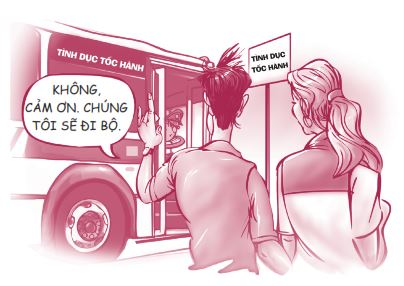
Bạn phải tập đi tập lại rất nhiều lần mới có thể thực hành thành thục kỹ thuật này. Tôi đã học được rằng nếu bạn nhảy xuống quá sớm, khi còn lại quá nhiều dây chùng, bạn sẽ bị chìm xuống mặt nước lạnh cóng và sẽ bắt đầu thở gấp; còn nếu bạn nhảy xuống quá trễ và bị hụt dây, bạn sẽ bị kéo mạnh ra khỏi bến tàu và cánh tay bạn sẽ gần như bị giật ra khỏi khớp. Nếu chọn đúng thời điểm, bạn sẽ bước xuống nước một cách mượt mà và bắt đầu trượt mà không bị ướt. Đó là cảm giác tuyệt vời nhất trên đời.
Sự thân mật về thể xác cũng giống như vậy. Nếu bạn quan hệ sai thời điểm, bạn sẽ bị chìm trong làn nước băng giá hoặc bị giật trật khớp cánh tay. Nếu bạn thực hiện đúng thời điểm và với đúng người, bạn sẽ trải qua cảm giác tuyệt vời nhất trên đời. Thời điểm quyết định tất cả.
Tôi còn nhớ đã đọc một đoạn trả lời phỏng vấn của một chàng sinh viên đại học hai mươi mốt tuổi:
“Sự trong trắng đã từng là mối bận tâm lớn đối với tôi. Tôi đã không giữ gìn sự trong trắng của mình vì tôi không tìm ra đáp án cho câu hỏi: ‘Vì sao ta phải chờ đợi mà không quan hệ tình dục ngay?’. Tôi đã chịu thua bởi vì không thể đưa ra một câu trả lời thuyết phục.”
Đó là một câu hỏi hay. Nếu bạn cũng không có một câu trả lời thuyết phục, hãy thử xem xét những lý do dưới đây.
VÌ ĐỨA TRẺ
Khả năng tạo ra sự sống của bạn cũng giống như một que diêm. Một que diêm có thể thắp sáng một căn phòng tối, nhưng que diêm này cũng có thể thiêu rụi ngôi nhà của bạn. Tương tự như vậy, khả năng tạo ra sự sống của bạn có thể tạo nên những điều tốt đẹp nhưng cũng có thể gây ra những hậu quả tai hại.
Mỗi lần bạn quan hệ tình dục là mỗi lần bạn đang đùa với lửa vì rất có thể bạn sẽ tạo ra một đứa trẻ trong khi bản thân bạn chưa sẵn sàng. Một đứa trẻ phải chào đời mà không có một người cha tận tụy hay được sinh ra với một người mẹ chưa học xong trung học thật không công bằng với em. Một số bạn gái chấp nhận mang thai chỉ vì việc có em bé khiến họ được chú ý và được yêu thương. Rất có thể họ sẽ được như ý nguyện. Nhưng chuyện này thật bất công cho đứa trẻ. Các em cần mọi điều kiện thuận lợi để lớn lên trên thế giới này.
Rất nhiều em bé lớn lên mà không có cha. May mắn thay, có rất nhiều bà mẹ làm tốt vai trò mẹ đơn thân của mình. Nếu bạn không may lớn lên mà không có cha, bạn vẫn có thể trở thành người phá vỡ vòng lẩn quẩn và trở thành người cha mà chính bản thân bạn luôn ao ước có được. Có thể bạn có biết diễn viên James Earl Jones - diễn viên lồng tiếng vai Darth Vader trong bộ phim Chiến tranh giữa các vì sao. Mới đây, anh đã nhận được giải thưởng từ Tổ chức Những người cha Quốc gia. Anh đã phát biểu: “Đối với tôi, giải thưởng này có ý nghĩa hơn bất kỳ giải thưởng về diễn xuất nào tôi từng nhận được. Tôi chưa bao giờ biết mặt cha mình. Cha tôi cũng chưa bao giờ biết mặt cha ông ấy. Nhưng con trai tôi thì biết tôi”.
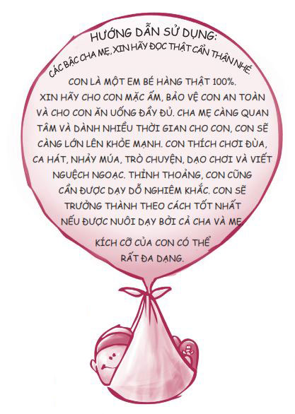
Đừng mạo hiểm đưa một đứa trẻ vào đời cho đến khi bạn sẵn sàng trở thành một người cha, người mẹ tuyệt vời. Hãy trao cho con bạn cơ hội thành công tốt nhất có thể. Hãy chờ đợi vì đứa trẻ.
VÌ MỐI QUAN HỆ
Các mối quan hệ thường tiến triển theo hai hướng khác nhau. Cả hai hướng đều bắt đầu từ sự thu hút . Có rất nhiều thứ khác nhau có thể cuốn hút ta và khiến chúng ta rung động - một ánh nhìn, một cử chỉ, một giọng nói. Nhưng từ điểm xuất phát này, mối quan hệ phát triển theo hướng nào là tùy thuộc ở chúng ta. Đam mê thể xác ích kỷ thường bắt đầu bằng sự mê đắm , một cảm giác rất giống với tình yêu chân thành, nhưng vốn dĩ chỉ là một rung động thoáng qua. Những cảm xúc ám ảnh ấy thường rất chóng tàn. Không bao lâu sau, chúng ta sẽ lại tìm kiếm một ngọn lửa đam mê khác. Bước tiến tiếp theo khi mối quan hệ của bạn đi theo con đường đam mê thể xác chính là quan hệ tình dục , bởi vì việc này mang đến cảm giác tốt đẹp và có vẻ như là một bước đi hợp lý trong sự tiến triển của mối quan hệ. Bạn cho rằng đó là tình yêu, nhưng thật ra đó chỉ là đam mê thể xác. Khi một mối quan hệ về cơ bản chỉ được xây dựng dựa trên quan hệ thể xác, sau cùng, việc chia tay là không thể tránh khỏi.
Nếu bạn muốn xây dựng một mối quan hệ tình cảm bền vững, hãy đi theo con đường tình yêu vị tha . Mối quan hệ như thế được khởi đầu trên nền tảng tình bạn . Bạn tìm hiểu và bắt đầu thấy thích một người mà không bận tâm đến việc gần gũi thể xác với họ. Sự gắn kết được hình thành khi bạn bắt đầu thấu hiểu và quan tâm người đó ở một mức độ sâu sắc hơn, bạn biết hy vọng, ước mơ, nỗi sợ và niềm tin của họ. Trong quá trình này, hai người có thể trao nhau những cái ôm và những nụ hôn, nhưng việc này được thúc đẩy bởi tình cảm và sự trân trọng hai người dành cho nhau, chứ không phải ham muốn thể xác. Sự cam kết xuất hiện khi hai bạn mong muốn chia sẻ cuộc sống với nhau trong một mối quan hệ dài lâu, đầy trách nhiệm, đó chính là hôn nhân . Ở giai đoạn này, tình dục là một điều thật tốt đẹp và viên mãn.
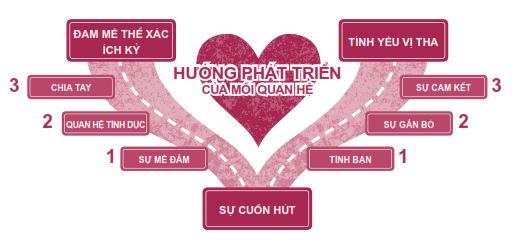
Hoon, một bạn trẻ mười bảy tuổi ở Hàn Quốc, đã chia sẻ về việc cậu phải chọn lựa phát triển mối quan hệ của mình theo hướng nào như sau:
Mình đã hẹn hò với bạn gái được hơn sáu tháng. Như hầu hết các bạn trai ở lứa tuổi của mình, mình cũng khá tò mò và có nhiều thắc mắc về tình dục. Mình nghe bạn bè nói rằng quan hệ tình dục rất tuyệt, nên mình nghĩ mình sẽ thử khi có cơ hội.
Một hôm, chỉ có mình và bạn gái ở nhà, sau khi xem tivi, mình bắt tay thực hiện kế hoạch. Khi hôn cô ấy, mình nhìn vào mắt cô ấy. Đôi mắt bạn gái mình ngập tràn nỗi sợ hãi và điều này đã khiến mình giật mình. Mình phải dừng lại và hỏi cô ấy: “Có gì không ổn à?”.
Cô ấy nói: “Không, không có gì. Em chỉ quá căng thẳng thôi. Bọn mình chưa đủ lớn”.
Lúc bấy giờ cô ấy hai mươi tuổi, mình thậm chí còn nhỏ tuổi hơn, nhưng mình vẫn trấn an cô ấy rằng bọn mình đã đủ lớn. Thế nhưng, những lời cô ấy nói sau đó đã hoàn toàn thay đổi suy nghĩ của mình về việc quan hệ tình dục. Cô ấy muốn dành điều đặc biệt ấy cho người sau này cô ấy kết hôn cùng. Cô ấy cũng nghĩ về những hậu quả của việc mang thai ngoài ý muốn. Cô ấy thú nhận rằng cô ấy không muốn chuyện quan hệ tình dục hấp tấp sẽ trở thành trở ngại trong mối quan hệ của bọn mình.
Những lời này đã giúp mình nhận ra ý nghĩa thật sự của tình dục đối với cả hai. Mình đã trao cô ấy một cái ôm thật chặt để thể hiện tình yêu của mình với cô ấy và cảm thấy mối quan hệ của bọn mình ấm áp hơn bao giờ hết.
Vậy đến mức nào được xem là quá giới hạn? Mọi người thường cho rằng một khi bạn bắt đầu một nụ hôn đầy đam mê và trở nên rạo rực, bạn sẽ khó mà hạ nhiệt và mọi việc sẽ cứ thế bị đẩy tới. Thế nên, tốt nhất chúng ta không nên vượt quá những cái ôm nhanh và hôn nhẹ. Nếu bạn muốn duy trì một mối quan hệ lành mạnh, tránh được rủi ro mang thai ngoài ý muốn, mắc các bệnh lây lan qua đường tình dục và tổn thương cảm xúc, hãy sống ở phía trên lằn ranh. Hãy trao cho nhau tình cảm trìu mến và để dành đam mê thể xác về sau.
Sống trên lằn ranh giới hạn
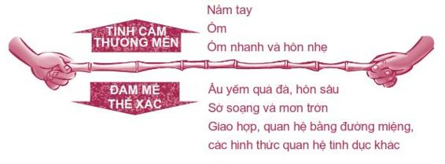
Bạn không tự nhiên sống bên trên lằn ranh giới hạn, bạn phải chủ động thực hiện điều này. Bằng cách nào ư? Bằng cách tự đặt ra những nguyên tắc cho chính mình. Khi tôi bắt đầu hẹn hò nghiêm túc vào thời đại học, tôi đã phải tự đặt ra một số nguyên tắc cho bản thân để không vượt quá giới hạn, chẳng hạn như không hẹn hò với những cô gái có tiếng là dễ dãi. Một chàng trai trẻ nói: “Người ta dạy bạn về tình dục, nhưng không ai nói gì đến các nguyên tắc”. Dưới đây là ba cách hiệu quả giúp bạn không vượt quá giới hạn.
• Thiết lập các mục tiêu và viết lời xác quyết nêu rõ những gì bạn muốn đạt được. Những thứ này sẽ cho bạn thêm sức mạnh để nói không với những điều bạn không thật sự muốn làm.
• Tránh những tình huống nhạy cảm nhiều rủi ro khiến bạn dễ ngã lòng, chẳng hạn như khi ở trong phòng một mình với bạn trai/bạn gái mình.
• Đừng để đầu óc bị ám ảnh bởi những hình ảnh khơi gợi về tình dục, những bài hát và phim ảnh bạo lực và bất cứ loại hình ảnh khỏa thân nào có ảnh hưởng đến suy nghĩ và hành động của bạn.
Hãy dành thời gian để tưởng tượng về người bạn mong muốn sẽ kết hôn về sau. Trông người đó như thế nào? Người đó có vui tính, thông minh và tử tế không? Bạn hy vọng người đó đang sống như thế nào trong hiện tại? Liệu bạn có phiền không khi biết người đó đàn đúm mỗi cuối tuần và có đến năm, mười hay mười lăm bạn tình khác nhau chỉ trong vòng vài năm? Liệu bạn có thấy vui khi biết người đó đang giữ mình để chờ đợi bạn? Sao bạn không sống cuộc đời của mình theo cách bạn mong muốn người kia sẽ sống đời của họ? Hãy chờ đợi tình yêu đích thực của bạn.
VÌ TỰ DO
Bạn có thường đi thả diều không? Bạn có thấy khi con diều đang bay cao, chính lực căng của dây đã giữ cho con diều không rơi xuống? Nếu bạn cắt sợi dây, tức bạn cắt đứt lực níu giữ, con diều sẽ đâm đầu xuống đất.
Trong tình yêu cũng vậy. Sự kiềm chế giúp duy trì tình yêu và các mối quan hệ. Có nhiều lúc chúng ta sẽ tự hỏi tại sao chúng ta lại không giải phóng những ham muốn đang sôi sục trong cơ thể mình. Câu trả lời là các nguyên tắc và sự kiềm chế không giới hạn chúng ta, mà ngược lại, chúng mang lại cho chúng ta sự tự do. Nếu bạn biết giữ mình và không quan hệ tình dục sớm, bạn sẽ tự do thoát khỏi những lo lắng, cảm giác hối hận, nguy cơ bệnh tật, khả năng mang thai ngoài ý muốn hoặc những trách nhiệm mà bạn chưa sẵn sàng lãnh nhận.
Maisey, một học sinh trường Trung học California, chia sẻ:
Hiện tại, mình chưa quan hệ tình dục. Mình tin rằng mình nên chờ đợi đến khi kết hôn. Mình không muốn cả đời phải lo lắng về các căn bệnh lây lan qua đường tình dục. Mình muốn được tự do làm bất cứ điều gì mình muốn. Mình có một người bạn. Cô ấy đã quan hệ tình dục và đang rất lo lắng về nguy cơ nhiễm HIV hay các bệnh lây nhiễm qua đường tình dục khác. Mình cứ cảm thấy “Ôi, cậu còn trẻ như vậy mà đã phải lo lắng về những chuyện này rồi”. Mình không muốn phải lo lắng như bạn ấy hay lo về chuyện có con và không thể vô tư vui chơi được nữa.
Nếu bạn bước vào quan hệ tình cảm mà không có kế hoạch rõ ràng, chuyện gì cũng có thể xảy ra. Hơn 50% các nữ sinh lớp Mười Hai từng quan hệ tình dục nói rằng chuyện quan hệ tình dục là việc tự nhiên xảy đến. Thôi nào các cô gái, tôi phải vạch trần sự thật rằng trong hầu hết trường hợp, chính các em đã để các chàng trai gây áp lực với mình, buộc các em phải đồng ý quan hệ tình dục. Có thể các em đã cảm nhận được mình đang bị áp lực nhưng không biết phải từ chối thế nào.
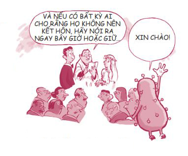
Tôi có vài tuyệt chiêu phòng thân cho các em đây. Trong quyển sách The Truth about Sex by High School Senior (tạm dịch: Sự thật về tình dục trong mắt các nữ sinh cuối cấp ), Kristen Anderson sẽ cung cấp cho các em một vài cách đối đáp khôn ngoan trước những chiêu bài mà các chàng trai thường sử dụng để chiếm đoạt các em. Những hướng dẫn này cũng có thể được áp dụng trong trường hợp các bạn nam bị bạn gái mình gây áp lực.
CHIÊU BÀI: “Thôi mà cưng, hãy để mối quan hệ của chúng ta trở nên sâu sắc, gắn bó hơn nào.”
ĐÁP TRẢ: “Em nghĩ tình dục sẽ chỉ hủy hoại những gì mà chúng ta đang có thôi, chứ không làm cho thứ gì tốt đẹp hơn đâu.”
“Sao lại không chứ? Anh không hiểu.”
“Chỉ là em không muốn.” (Đó là tất cả những gì bạn cần giải thích.)
“Có lẽ chúng ta nên chia tay cho tới khi em thật sự trưởng thành.”
“Có lẽ chúng ta nên chia tay cho tới khi anh thật sự trưởng thành.”
“Em sẽ đợi đến khi em kết hôn ư? Anh thậm chí còn không biết liệu anh có kết hôn không nữa.”
“Tiếc quá, nếu vậy anh sẽ không bao giờ có cơ hội quan hệ với em đâu.”
“Trong số tất cả những cô nàng thích anh, anh đã chọn em.”
“Em nghĩ anh có gu lắm đấy.”
“Trước đây em cũng đã từng quan hệ rồi mà. Thế tại sao bây giờ lại không được?”
“Vấn đề là em đã quan hệ và giờ đây em cảm thấy hối tiếc vì điều đó. Em không muốn phải hối tiếc thêm lần nữa.”
“Cứ thư giãn và để mọi thứ tự nhiên diễn ra thôi.”
(Nếu bạn đang thấy căng thẳng, chắc hẳn phải có lý do. Tâm trí và cơ thể bạn đang cố gắng nói gì đó với bạn. Hãy tôn trọng trực giác của mình và nhanh chóng rời khỏi đó.)
“Nếu yêu anh, em phải quan hệ với anh chứ.”
“Nếu yêu em, anh sẽ không gây áp lực với em như vậy.”
Dù bạn lựa chọn làm gì đi nữa, cũng đừng đổi ý chỉ vì áp lực ngay tại thời điểm đó. Một quý cô hay quý ông thực thụ sẽ không ép bạn làm những việc bạn không muốn làm. Hãy chờ đợi vì sự tự do.
Đáng để chờ
Dưới đây là hai lá thư của hai bạn trẻ đã sẵn lòng chia sẻ về lý do họ chọn chờ đợi.
Gửi đến: Những chàng trai cho rằng phải quan hệ tình dục thì mới bình thường
Từ: Một chàng trai đã nói không với quan hệ tình dục và thấy rất thoải mái với quyết định đó
Mình luôn được cha mẹ dạy rằng cơ thể mình là một ngôi đền thiêng liêng và chuyện tình dục phải được dành cho hôn nhân. Bên cạnh đó, những thông tin về các bệnh lây lan qua đường tình dục mẹ dạy cho mình khiến mình thấy rất sợ và điều này đã thuyết phục mình tuân thủ cam kết giữ mình cho đến khi kết hôn.
Sau khi tốt nghiệp trung học, mình nhận được học bổng đến chơi bóng cho Đại học Temple. Đội bóng của mình có một nhóm bạn nam rất tuyệt, nhưng mình không quen biết ai, thế nên mình phải tái thiết lập các mối quan hệ xã hội. Ban đầu, một số người bạn thân thiết tỏ ra tôn trọng niềm tin của mình nhưng họ không biết mình có nghiêm túc về việc “giữ mình” hay không, bởi trước đây họ chưa từng gặp ai có cam kết như mình cả. Hiện tại, mình đã có những người bạn tuyệt vời có cùng chuẩn mực sống. Mình rất vui khi được kết giao với những người có cùng quan điểm với mình về chuyện tình dục trước hôn nhân.
Mình từng quen vài người bạn gái, mình cũng gặp gỡ khá nhiều người, và mình không gặp phải vấn đề gì về chuyện tình dục cả bởi vì những cô gái mình gặp đều biết trước về quan điểm của mình và rất tôn trọng quan điểm đó. Bọn mình kết nối với nhau ở những khía cạnh khác, không chỉ riêng về tình dục. Nhờ vậy, mình có cơ hội hiểu rõ họ hơn. Thỉnh thoảng, họ cũng hỏi làm thế nào mình có thể kiềm chế được bản thân. Mình luôn trả lời rằng nếu bạn thật sự tin tưởng một điều gì đó, bạn sẽ không muốn phá vỡ cam kết của mình, đúng thế không? Mình mong chờ cuộc hôn nhân trong tương lai và mong chờ việc xây đắp một gia đình với người mình đã giữ gìn bản thân để dành tặng họ.
Gửi đến: Các cô gái đang bị áp lực phải quan hệ tình dục
Từ: Sue Simmerman, một cô gái từng ở trong hoàn cảnh như thế
Thời học cấp hai, mình hoàn toàn không gặp khó khăn gì khi quyết định không quan hệ tình dục trước hôn nhân, nhưng khi mình lên cấp ba, quyết định này thật sự trở thành vấn đề với mình. Rất nhiều bạn bè của mình bắt đầu quan hệ tình dục với các nam sinh lớp trên.
Mình chỉ quen một người bạn trai từ năm học lớp Tám cho đến năm nhất đại học (khoảng năm năm rưỡi), vì vậy, thay vì phải từ chối rất nhiều người, mình chỉ phải từ chối mỗi người bạn trai này thôi. Mình phải thừa nhận rằng có vài lần mình suýt bỏ cuộc đơn giản vì mình quá mệt mỏi khi phải tranh cãi với anh ta hết lần này đến lần khác cùng vì một câu chuyện và cùng một vấn đề.
Có nhiều lúc, vì quá bực bội, mình đã nói: “Thôi được rồi, sao cũng được. Em sẽ làm chuyện ấy với anh được chưa?”. May thay, mình luôn nhanh chóng suy nghĩ lại và nói: “Anh biết không, em sẽ không chịu thua anh và để anh hủy hoại trải nghiệm đặc biệt này của em, vì nếu làm thế, em sẽ vô cùng thất vọng về bản thân”. Sau đó, mình thường xin lỗi anh ta vì niềm tin của mình. Mình cực kỳ ghét việc này và hoàn toàn hối hận về sau vì đã làm thế. Thật may mắn, cuối cùng mình cũng nhận ra đó là một mối quan hệ không lành mạnh, thiếu trưởng thành và mình đã có đủ can đảm để kết thúc mối quan hệ đó.
Hiện tại, mình mười chín tuổi và chưa có ngày nào mình phải hối tiếc về quyết định “giữ gìn” của mình cả. Thật ra, mình càng ngày càng thấy hạnh phúc hơn nhờ quyết định ấy. Giờ mình đã có một người bạn trai mới - người hoàn toàn tôn trọng quyết định của mình và không tranh cãi với mình về quyết định ấy. Mối quan hệ của bọn mình rất tuyệt vời.
Nếu ngoài kia có một cô gái đang phải đấu tranh nội tâm về việc có nên “giữ gìn” hay không, mình sẽ chia sẻ từ kinh nghiệm bản thân: Hãy thành thật về những điều bạn muốn dành cho bản thân. Nếu bạn bè hoặc bạn trai của bạn không chấp nhận quyết định của bạn và chọc ghẹo bạn vì điều đó, họ không phải là những người bạn tốt.
Dưới đây là những ưu thế của việc chờ đợi mình đã nghiệm ra được:
1. Mình có một món quà đặc biệt để dành tặng cho người mình sẽ kết hôn.
2. Mình đã tránh được những tổn thương tâm lý mà mình từng chứng kiến một số bạn bè của mình phải trải qua sau khi quan hệ tình dục với nhiều người khác nhau và thậm chí còn bị lợi dụng.
3. Mình tránh được tai tiếng.
4. Mình đã học hỏi được rất nhiều về lòng tự trọng.
5. Mình học được khả năng tự kiềm chế.
6. Mình biết rằng quyết định của mình hợp với ý Chúa, gia đình và bản thân mình.
7. Không như nhiều người bạn của mình, mình không phải lo lắng về nguy cơ bệnh tật và mang thai ngoài ý muốn.
Hiệu ứng Domino
Nếu bạn từng có nhiều bạn tình, bạn đang ở trong một mối quan hệ mà bạn bị ngược đãi, bạn đánh mất lòng tự trọng hay bạn đã mang thai hoặc làm người khác mang thai… vậy thì sao đây?
Bất kể bạn làm gì, đừng để các khía cạnh trong cuộc sống của bạn rơi vào tình trạng đổ ngã hàng loạt như một dãy các quân cờ domino, chính là khi sự hối tiếc này dẫn đến sự hối tiếc khác, cứ liên tục như vậy. Có những lúc chúng ta nghĩ: “Tiêu tùng hết rồi. Giờ chuyện có ra sao thì mình cũng mặc kệ”. Hãy nhớ, một lựa chọn sai lầm vẫn tốt hơn hai hay ba lựa chọn sai lầm. Nếu bạn đã trót làm một điều khiến bạn phải hối tiếc, hãy dừng hiệu ứng Domino lại bằng cách kiểm soát bản thân và đừng mắc thêm sai lầm nào nữa.
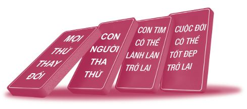
Hãy nhớ rằng ngày hôm nay sẽ không kéo dài mãi mãi. Hoàn cảnh khó khăn hiện tại của bạn sẽ trở nên tốt đẹp hơn nếu bạn chịu sửa đổi bản thân. Mọi thứ sẽ đổi thay, mọi người có thể tha thứ, những con tim có thể lành lặn trở lại và cuộc sống sẽ lại tươi đẹp.
Chúng ta hãy cùng xem Andrea Small đã ngăn không cho những quân cờ domino của cô ấy tiếp tục ngã như thế nào nhé.
Mình trở thành mẹ của một bé gái khi chỉ mới mười lăm tuổi. Năm mình mười sáu tuổi, hai mẹ con mình sống ở một căn hộ nhỏ trong thành phố và mình phải đi làm để lo cho cuộc sống của cả hai. Mình chưa từng học trung học, nhưng mình đã dành rất nhiều thời gian lê la ở hiệu sách Barnes & Noble và đọc sách về mọi chủ đề. Mình lấy được bằng GED 4 và điểm thi SAT của mình cũng khá cao, thế là mình đã được nhận vào đại học sớm hơn một năm so với các bạn học trung học. Một năm sau đó, mình bắt đầu học tại Đại học Virginia.
Mình vừa học vừa làm thêm tại một quán cà phê suốt thời đại học. Con gái mình được gửi đi nhà trẻ. Vào buổi tối, con bé phải nghe mình đọc Tuyển tập Văn học Anh thay vì truyện Goodnight Moon, bởi vì đó là bài tập về nhà của mình!
Năm tháng trôi qua, con mình đã bước sang tuổi mười bốn và con bé luôn giành được vị trí danh giá trong các đợt xếp hạng học lực. Con bé giờ là chị cả trong số bốn đứa con xinh đẹp, thông minh và học giỏi của mình.
Mình đã học được rằng chúng ta không thể sống mãi trong một thành công hay thất bại nào đó. Chúng ta sẽ luôn phải đối mặt với những thách thức mới và cuộc sống không bao giờ diễn ra đúng như mong muốn của chúng ta. Và chính nhờ điều đó mà cuộc sống mới không nhàm chán.
4
GED (viết tắt của General Educational Development) là một loại chứng chỉ tương đương bằng tốt nghiệp trung học.
Tôi có thể kể thêm nhiều câu chuyện nữa về những bạn trẻ đã vực dậy thành công cuộc đời mình sau khi đưa ra một quyết định sai lầm. Chẳng hạn, một cô gái sinh con khi chưa kết hôn đã quyết định để một cặp vợ chồng yêu quý trẻ em nhận con mình làm con nuôi bởi vì cô ấy muốn con mình được sống một cuộc sống tốt đẹp hơn; một người cha trẻ đã quyết định kết hôn với cô gái đã mang thai với mình và trở thành một người chồng, người cha tận tụy; một bạn trẻ quan hệ tình dục khi còn quá trẻ và phải chịu tai tiếng về việc đó đã thay đổi hoàn toàn quan điểm về tình dục và xây dựng các mối quan hệ tình cảm sau đó theo cách hoàn toàn khác.
Nếu bạn bắt đầu quan hệ tình dục khi còn rất trẻ, vẫn duy trì điều đó cho đến hiện tại và bắt đầu cảm thấy hối hận về chuyện đó, không bao giờ là quá muộn để quên đi quá khứ và làm lại từ đầu.
TÌNH YÊU ĐÍCH THỰC
Chúng ta đã đi đến phần cuối của chương này. Tôi hy vọng bạn không cảm thấy khó chịu bởi các quan điểm và sự thẳng thắn của tôi. Mong muốn duy nhất của tôi là giúp bạn chuẩn bị thật tốt trong hành trình tìm kiếm tình yêu đích thực của mình.
Về phần tôi, tôi luôn gặp khó khăn khi phải đưa ra những quyết định lớn. Tôi đã từng thắc mắc không biết liệu mình có kết hôn không. Thế rồi khi vào đại học, tôi đã gặp một cô gái tôi thật sự rất thích, tên cô ấy là Rebecca.
Tôi chưa bao giờ ngờ đến việc này, nhưng tôi đã yêu cô ấy, mạnh dạn đưa ra quyết định và rồi kết hôn với cô ấy. Một trong những điều hay ho nhất chính là trước khi kết hôn, chúng tôi đã có một mối quan hệ tình cảm tuyệt vời dựa trên tình bạn và tình yêu, chứ không chỉ dựa trên đam mê thể xác. Đây chính là điều tạo nên mọi sự khác biệt.
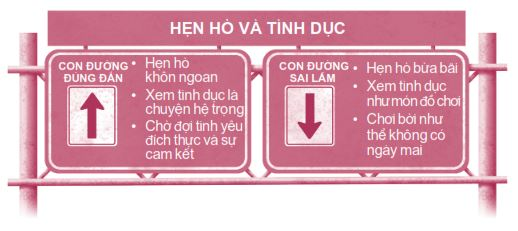
Có hai con đường để bạn lựa chọn. Tôi hy vọng bạn sẽ chọn con đường đúng đắn bằng cách hẹn hò khôn ngoan, xem tình dục và sự thân mật là chuyện hệ trọng, kiên nhẫn chờ đợi tình yêu và sự cam kết. Tôi hứa là bạn sẽ không bao giờ phải hối hận đâu. Hãy tin tôi, việc bị tan nát cõi lòng, cảm thấy bị lợi dụng, phải lãnh trách nhiệm nuôi con khi thật ra bạn vẫn chưa kịp trưởng thành hay phải nói với vị hôn phu/hôn thê tương lai của mình: “Em/anh xin lỗi, nhưng em/anh bị mắc bệnh tình dục hồi còn học trung học” không phải là những chuyện bạn muốn trải qua đâu.
Hãy lựa chọn thật khôn ngoan.
Hãy cẩn thận với những nụ hôn của mình.
Và luôn nhớ rằng tình yêu hoàn toàn xứng đáng để chúng ta chờ đợi.
ĐIỀU THÚ VỊ TIẾP THEO
Nếu bạn từng thắc mắc về bồ đà, cần sa, thuốc lắc… bạn sẽ sớm được biết thôi. Hãy đọc tiếp nhé.
NHỮNG BƯỚC NHỎ
1. Hãy lên kế hoạch cho một buổi hẹn hò độc đáo và vui vẻ. Hãy thử tìm kiếm thêm nhiều ý tưởng thú vị trên mạng.
2. Nếu bạn biết có ai đó đang phải chịu đựng một mối quan hệ ngược đãi, hãy cho họ mượn quyển sách này và chỉ họ đọc phần “Hẹn hò khôn ngoan”. Hãy luôn ủng hộ và nhắc nhở người bạn ấy rằng không ai đáng bị ngược đãi cả.
3. Hãy xem bộ phim A walk to Remember . Trong lúc xem, hãy tự hỏi: Bạn muốn sống theo những tiêu chuẩn nào?
4. Hãy chia sẻ 6 Hướng dẫn hẹn hò thông minh với một người nào đó - anh chị em, cha mẹ, hay bạn bè.
5. Hãy viết ra năm lý do thuyết phục cho việc trì hoãn quan hệ tình dục.
____________________________________________
____________________________________________
____________________________________________
6. Hãy đăng tải khẩu hiệu: “Thời điểm quyết định tất cả!”.
7. Hãy viết ra những câu đối đáp dành cho những người đang cố tình lợi dụng bạn. Hãy thực hành nói những câu nói ấy trước gương hoặc thực hành với con thú nhồi bông xấu xí nhất của bạn.
8. Hãy vẽ một đường thẳng trên gương của bạn bằng thỏi son hoặc bút sáp màu để tự nhắc bản thân phải sống bên trên lằn ranh. Hãy dành cho nhau tình cảm trong sáng và để dành đam mê tình dục về sau.
9. Nếu mối quan hệ của bạn chỉ dựa trên ham muốn thể xác, hãy biến mối quan hệ này thành mối quan hệ dựa trên tình bạn. Nếu bản chất đó là một mối quan hệ lành mạnh, nó sẽ tồn tại được. Còn nếu mối quan hệ này chỉ dựa trên đam mê nhất thời, nó sẽ tiêu tan. Dù sự việc có diễn biến theo hướng nào đi nữa, bạn cũng là người được lợi.
10. Hãy tưởng tượng về người bạn sẽ kết hôn trong tương lai. Bạn hy vọng họ đang sống cuộc đời họ như thế nào, đặc biệt là trong việc hẹn hò và tình dục?
Tôi hy vọng người yêu trong tương lai của tôi…
____________________________________________
____________________________________________
____________________________________________